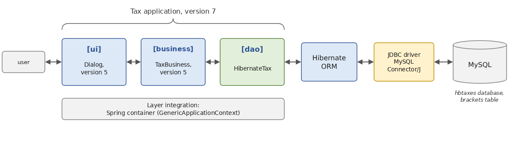

11. Hibernate
Das vorherige Kapitel hat gezeigt, wie eine Kotlin-Anwendung über einen JDBC-Treiber mit einer Datenbank interagiert: Es wird eine Verbindung geöffnet, SQL-Befehle werden ausgeführt, die Ergebniszeilen werden Spalte für Spalte gelesen und in Objekte kopiert. Dieser Kopiervorgang – von Zeilen zu Objekten und von Objekten zu den [INSERT], [UPDATE] und [DELETE]-Befehlen – ist repetitiv. Er lässt sich mit einem Werkzeug automatisieren: einem „Object-Relational Mapper“ (ORM). Dieses Kapitel stellt den am weitesten verbreiteten ORM der Java-Welt vor, Hibernate, und den Standard, den er implementiert, Jakarta Persistence. Kotlin hat keinen eigenen ORM dieses Kalibers: Es verwendet direkt die der Java-Plattform – allen voran Hibernate –, so wie es auch andere Java-Bibliotheken verwendet. Sie müssen nur einige Regeln kennen, um Kotlin-Entitäten zu schreiben, die mit Hibernate funktionieren: Dieses Kapitel stellt sie nach und nach vor.
Das Kapitel greift den Beispielcode der Artikel aus Kapitel 10 wieder auf und endet mit Version 7 der Anwendung zur Steuerberechnung, deren [dao]-Schicht Hibernate verwendet.
11.1. Was ist ein ORM?
11.1.1. Objekte und Tabellen
Eine Kotlin-Anwendung arbeitet mit Objekten: Ein Artikel hat einen Namen, einen Preis und einen Lagerbestand; eine Bestellung hat einen Kunden und eine Liste von Bestellpositionen, von denen jede auf einen Artikel verweist. Eine relationale Datenbank speichert dieselben Informationen in Tabellen: eine Zeile in der Tabelle [articles] pro Artikel, eine Zeile in der Tabelle [orders] pro Bestellung, wobei die Beziehungen zwischen den Zeilen durch Fremdschlüssel ausgedrückt werden. Die beiden Welten passen nicht ganz zusammen:
- Ein Objekt verweist direkt auf andere Objekte ([order.client]); eine Zeile enthält den Primärschlüsselwert einer anderen Zeile ([client_id]);
- Ein Objekt kann eine Collection enthalten ([order.lines]); eine Tabelle enthält nur einzelne Werte; die Collection wird durch die Zeilen einer anderen Tabelle dargestellt, die auf die Bestellung verweisen;
- Die Kotlin-Typen ([String], [BigDecimal], [LocalDate], [Boolean]) und die SQL-Typen ([varchar(30)], [decimal(10,2)], [date], [bit]) sind nicht dieselben;
- Objekte werden mit Kotlin abgefragt (die Operationen [filter], [map]... auf Collections) und Tabellen werden mit SQL abgefragt.
Ein ORM überbrückt die beiden Welten. Wir definieren die Zuordnung zwischen Klassen und Tabellen (das Modell bzw. das „Mapping“) ein für alle Mal; er übernimmt dann:
- die Übersetzung von Abfragen, die in einer objektorientierten Sprache (HQL) geschrieben oder mit Code (Criteria-API) konstruiert wurden, in SQL- und [SELECT]-Befehle;
- das Erzeugen von Objekten aus den gelesenen Zeilen (dies wird Materialisierung genannt);
- das Speichern der gelesenen Objekte und das Erkennen derjenigen, die geändert, hinzugefügt oder gelöscht wurden;
- das Generieren der [INSERT], [UPDATE], und [DELETE]-Befehle, die diese Änderungen in der Datenbank abbilden;
- und bei Bedarf das Erstellen und Aktualisieren des Datenbankschemas (Tabellen, Spalten, Indizes) anhand der Klassen.
Die Architektur einer Anwendung, die Hibernate mit MySQL verwendet, sieht wie folgt aus:

- [1]: die Anwendung. Ihre [dao]-Schicht kommuniziert nicht mehr direkt mit dem JDBC-Treiber, sondern mit Hibernate, über ein [Session]-Objekt und HQL-Abfragen;
- [2]: Hibernate, DBMS-unabhängig: Modell, Abfrageübersetzung, Änderungsverfolgung, Schemagenerierung;
- [3]: der Dialekt des DBMS (hier [MySQLDialect]): Er kennt die SQL-Syntax des DBMS, seine Spaltentypen und seine Funktionen. Die Dialekte der wichtigsten DBMS sind Teil von Hibernate selbst: Dem Projekt muss nichts hinzugefügt werden;
- [4]: der JDBC-Treiber für das DBMS, derjenige aus Kapitel 10 (MySQL Connector/J): Hibernate ersetzt JDBC nicht, sondern verwendet es;
- [5]: das DBMS.
Ob die Anwendung in Java oder Kotlin geschrieben ist, ändert nichts an diesem Schema: Hibernate ist eine Java-Bibliothek, die Kotlin-Code wie jede andere Java-Bibliothek aufruft (Kapitel 5), und die kompilierten Kotlin-Klassen sind für Hibernate Java-Klassen wie alle anderen.
11.1.2. Jakarta Persistence und Hibernate
Hibernate wurde 2001 von Gavin King als Reaktion auf die Schwerfälligkeit der „Entity Beans“ der damaligen Java Platform EE geschaffen. Sein Erfolg war so groß, dass seine Ideen in einen Standard einflossen, JPA (Java Persistence API), der 2006 mit Java EE 5 veröffentlicht wurde. Als Java EE an die Eclipse Foundation übertragen und in Jakarta EE umbenannt wurde, wurde JPA zu Jakarta Persistence, und seine Pakete wechselten von [javax.persistence] zu [jakarta.persistence] (Version 3.0, 2020). Die aktuelle Version ist Jakarta Persistence 3.2 (2024).
Jakarta Persistence ist eine Spezifikation: eine Menge von Interfaces ([EntityManagerFactory], [EntityManager] ...), Annotationen ([@Entity], [@Id], [@Column] ...) und eine Abfragesprache, JPQL. Sie wird von mehreren Produkten implementiert: Hibernate ORM (das am weitesten verbreitete, in Spring Boot und Quarkus verwendet), EclipseLink (die Referenzimplementierung) ... Dieser Kurs verwendet Hibernate ORM 7.4.5, das Jakarta Persistence 3.2 implementiert.
Hibernate bietet zwei Möglichkeiten der Nutzung:
- ausschließlich über die Standard-Interfaces: In diesem Fall hängt der Code nur von [jakarta.persistence] ab, und ein Wechsel der Implementierung wäre prinzipiell möglich;
- über seine eigene („native“) API, die funktionsreicher ist und deren Interfaces die des Standards erweitern : eine [SessionFactory] ist eine [EntityManagerFactory], und eine [Session] ist ein [EntityManager].
Wir verwenden die eigene API von Hibernate, wie in dessen Dokumentation empfohlen: Sie bietet alle Standardmethoden ([persist], [find], [merge], [remove] ...) sowie die Erweiterungen von Hibernate. Die Annotationen sind jedoch stets die vom Standard definierten. Die folgende Tabelle zeigt die Entsprechungen:
Jakarta Persistence | Hibernate | Rolle |
[EntityManagerFactory] | [SessionFactory] | Hibernate-Konfiguration für eine Datenbank: ein schwergewichtiges Objekt, das einmal erstellt und von der gesamten Anwendung gemeinsam genutzt wird |
[EntityManager] | [Session] | Eine Datenbanksitzung: ein leichtgewichtiges, kurzlebiges Objekt |
[EntityTransaction] | [Transaction] | eine Transaktion |
JPQL | HQL | die Abfragesprache; HQL ist eine Obermenge von JPQL |
[CriteriaBuilder] | [HibernateCriteriaBuilder] | Abfragekonstruktion per Code |
Im Kotlin-Ökosystem begegnen Ihnen auch Datenzugriffsbibliotheken anderer Art, etwa Exposed (von JetBrains), mit dem Sie SQL-Abfragen in einer dedizierten Kotlin-Sprache schreiben können. Diese sind leichtgewichtiger als ein vollständiger ORM; Hibernate bleibt der Standard für Spring-Anwendungen, sowohl in Java als auch in Kotlin, und ihn untersuchen wir.
11.1.3. Bibliotheken
Die in diesem Kapitel verwendeten Bibliotheken lauten wie folgt (sie sind im Anhang zu den Abhängigkeiten zusammengefasst):
Gradle-Abhängigkeit | Rolle |
[org.hibernate.orm:hibernate-core] 7.4.5.Final | Hibernate selbst; es enthält die API von Jakarta Persistence 3.2 ([jakarta.persistence-api]) und seine eigenen Abhängigkeiten (Byte Buddy zur Klassengenerierung, ANTLR zur Abfrageanalyse, JBoss Logging für das Logging usw.) |
[com.mysql:mysql-connector-j] 9.7.0 | der JDBC-Treiber für MySQL, derjenige aus Kapitel 10 |
[ch.qos.logback:logback-classic] 1.5.38 | Logback, das das Log von Hibernate empfängt |
Hibernate schreibt sein Log (ausgeführte SQL-Befehle, Warnungen usw.) über JBoss Logging, eine kleine Bibliothek, die Meldungen einfach an das im Klassenpfad gefundene Logging-System weiterleitet: Log4j 2 oder Logback (über SLF4J) oder, falls keines vorhanden ist, das des JDK bzw. [java.util.logging]. Ohne Konfiguration zeigt Letzteres jede Meldung auf zwei Zeilen an, in den meisten Konsolen in Rot, was die Ausgabe des Programms schwer lesbar macht. Wir fügen daher Logback zu unseren Projekten hinzu und konfigurieren es mit einer Datei [logback.xml].
Zusätzlich zu diesen Bibliotheken gibt es zwei Kotlin-Compiler-Plugins, die Kotlin-Klassen an die Anforderungen von Hibernate anpassen: [kotlin("plugin.jpa")] und [kotlin("plugin.allopen")]. Warum sie notwendig sind, sehen wir bei der ersten Entität.
11.1.4. Code-First oder Database-First
Das Modell (die Zuordnung zwischen Klassen und Tabellen) kann auf zwei Arten aufgebaut werden:
- Code-First: Sie schreiben die Kotlin-Klassen, und Hibernate leitet daraus das Datenbankschema ab, das es dann selbst erstellen kann. Dies ist der Ansatz, der in diesem Kapitel verfolgt wird;
- Database-First: Die Datenbank existiert bereits, und die Klassen werden anhand ihres Schemas mit den Reverse-Engineering-Werkzeugen von Hibernate (Hibernate Tools) oder mit denen der Entwicklungsumgebungen generiert (IntelliJ IDEA kann Entitäten aus Datenbanktabellen sowohl in Java als auch in Kotlin erzeugen). Dieser Ansatz wird bei Anwendungen verwendet, die mit einer bestehenden Datenbank arbeiten müssen. Der generierte Code ähnelt dem, den wir von Hand schreiben würden.
11.2. Ein erstes Beispiel
11.2.1. Das Projekt
Die Beispiele dieses Kapitels sind Unterprojekte eines Gradle-Builds mit mehreren Projekten (siehe Kapitel 6) und befinden sich im Ordner [11-hibernate]:
Die Datei [settings.gradle.kts] deklariert die Unterprojekte:
- Zeilen 3–6: das Plugin, mit dem Gradle JDK 25 selbst herunterladen kann, wenn es auf dem Rechner nicht gefunden wird (Kapitel 2);
- Zeile 8: der Name des Wurzelprojekts;
- Zeile 11: die beiden Bibliotheken, die den Beispielen gemeinsam sind;
- Zeilen 13–14: ein Unterprojekt, als Beispiel. Gradle verlangt nicht, dass sie in der Reihenfolge ihrer Abhängigkeiten aufgeführt werden; es leitet diese selbst aus den zwischen den Unterprojekten deklarierten Abhängigkeiten ab;
- Zeile 16: die beiden Unterprojekte für Version 7 der Anwendung zur Steuerberechnung. Der Name [TaxV7:tax-dao-hibernate] bezeichnet den Ordner [TaxV7/tax-dao-hibernate];
- Zeile 19: der Composite Build aus Kapitel 6, dessen Anwendung TaxV7 die Schichten [business] und [ui] wiederverwenden wird.
Das Wurzelprojekt deklariert zusammen mit ihren Versionen die Plugins, die von den Unterprojekten verwendet werden:
- Zeile 3: das Kotlin-Plugin für die JVM;
- Zeilen 4–5: die beiden Kotlin-Compiler-Plugins, die für die Entitäten erforderlich sind (weiter unten beschrieben);
- Zeile 6: das für Spring konfigurierte „all-open“-Plugin (Kapitel 6), das vom Beispiel [injection] verwendet wird;
- [apply false]: Die Plugins werden hier nur zusammen mit ihren Versionen deklariert; jedes Unterprojekt wendet die benötigten an, ohne die Version zu wiederholen.
Das erste Beispiel ist das Unterprojekt [first]. Es ist von den anderen unabhängig:
- Zeilen 3–8: die angewendeten Plugins: Kotlin, die beiden Entitäts-Plugins und [application] zum Ausführen des Programms;
- Zeilen 17–20: Hibernate, der JDBC-Treiber für MySQL und Logback. Der Treiber und Logback werden nur zur Laufzeit verwendet ([runtimeOnly]): Der Programmcode referenziert keine ihrer Klassen;
- Zeilen 24–27: die Konfiguration des Plugins [allopen] (weiter unten beschrieben);
- Zeilen 31–34: die für den Kurs üblichen Kompilierungsoptionen (JDK 25, Warnungen werden als Fehler behandelt);
- Zeile 40: die Hauptklasse des Unterprojekts. Eine Datei [Main.kt] aus dem [first]-Paket wird zu einer Klasse [first.MainKt] kompiliert (Kapitel 3);
- Zeilen 43–46: Die von Gradle gestarteten Programme schreiben ihre Ausgabe in UTF-8, damit Zeichen mit Akzenten unter Windows korrekt angezeigt werden (Kapitel 2).
Um ein Beispiel auszuführen, wechseln Sie in den Ordner [11-hibernate] und geben die Aufgabe [run] des Unterprojekts über ihren Pfad an ([:first:run]); Gradle erstellt zuerst die Unterprojekte, von denen es abhängt (unter Linux und macOS geben Sie [./gradlew] ein):
Das Programm wird im Ordner des Unterprojekts ausgeführt ([11-hibernate/first]). Verwendet wird die Datenbank [hbfirst] auf dem lokalen MySQL-Server, der der Laragon-Server ist (siehe Anhänge). Sie muss nicht existieren: MySQL legt sie an.
11.2.2. Die Entität [Article]
Eine Klasse, deren Objekte in einer Tabelle gespeichert werden, heißt Entität. Unsere erste Entität ist ein Artikel eines Geschäfts, wie in der Tabelle [articles] aus Kapitel 10:
- Zeile 10: Die Annotation [@Entity] (Paket [jakarta.persistence]) macht die Klasse zu einer Entität. Es handelt sich um eine gewöhnliche Kotlin-Klasse, die keine Hibernate-Klasse erweitert; man bezeichnet sie als POJO („Plain Old Java Object“);
- Zeilen 13–16: die im primären Konstruktor deklarierten Eigenschaften (Kapitel 4). Es sind [var]: Hibernate muss ihre Werte ändern können, und die Anwendung ebenfalls (um einen Preis oder einen Lagerbestand zu ändern). Jede Eigenschaft wird zu einer Spalte mit demselben Namen;
- Zeilen 19–21: Der Primärschlüssel wird durch die Annotation [@Id] gekennzeichnet. Es gibt keine Namenskonvention: Die Annotation ist erforderlich. [@GeneratedValue(strategy = GenerationType.IDENTITY)] gibt an, dass seine Werte vom DBMS generiert werden (die Spalte [AUTO_INCREMENT] von MySQL). Der Bezeichner ist kein Konstruktorparameter: Er wird vom DBMS geliefert. Sein Typ ist [Int?], und sein Anfangswert ist [null], was „noch nicht in der Datenbank gespeichert“ bedeutet. Der Typ [Int?] wird zu [java.lang.Integer] kompiliert und der Typ [Int] zu [int] (Kapitel 3);
- Zeile 24: eine praktische Darstellung des Artikels. Das Format [%.2f] zeigt den Preis mit zwei Nachkommastellen an, entsprechend den jeweiligen kulturellen Konventionen (ein Komma in Frankreich, ein Punkt in der englischen Locale, die für die Ergebnisse verwendet wird).
Wohin gehören Annotationen? Im Bytecode entspricht eine Kotlin-Eigenschaft mehreren Java-Elementen: einem privaten Feld, einer Zugriffsmethode ([getX]), einer Änderungsmethode ([setX]) und im vorliegenden Fall einem Konstruktorparameter. Eine Annotation, die ohne weitere Angabe vor eine Eigenschaft gesetzt wird, platziert Kotlin 2.4 anhand der Ziele, die sie akzeptiert: auf dem Konstruktorparameter, wenn es sich um eine Konstruktoreigenschaft handelt und die Annotation dies zulässt, zusätzlich auf der Kotlin-Eigenschaft selbst, wenn die Annotation dies zulässt; andernfalls auf dem Feld. Die Annotationen von Jakarta Persistence ([@Id], [@Column] ...) gelten nicht für Kotlin-Parameter oder -Eigenschaften, sondern nur für Java-Felder und -Methoden: Sie werden daher auf dem Feld platziert. Genau das wollen wir: Da die Annotation [@Id] auf einem Feld sitzt, greift Hibernate direkt auf die Felder zu (es liest und schreibt sie per Reflection, auch wenn sie privat sind). Sie können dies mit dem Werkzeug [javap] des JDK überprüfen, das den Inhalt einer Datei [.class] anzeigt. Sie können das Ziel einer Annotation auch mit einem Präfix angeben: [@field:Column(length = 30)] platziert sie auf dem Feld, [@get:Transient] auf der Zugriffsmethode.
Jakarta Persistence verlangt zwei Dinge, die Kotlin-Klassen standardmäßig nicht bieten:
- einen parameterlosen Konstruktor, den Hibernate verwendet, um aus der Datenbank gelesene Objekte zu erzeugen (anschließend füllt es deren Felder). Unsere Klasse hat nur einen Konstruktor mit vier Parametern. In Java fügt man manuell einen geschützten parameterlosen Konstruktor hinzu. In Kotlin übernimmt das das Compiler-Plugin [no-arg], konfiguriert für JPA ([kotlin("plugin.jpa")]), das ihn jeder Klasse hinzufügt, die mit [@Entity], [@Embeddable], oder [@MappedSuperclass] annotiert ist. Dieser Konstruktor existiert im Bytecode, wo Hibernate ihn per Reflection findet, ist aber im Kotlin-Code nicht sichtbar: [Article()] bleibt ein Kompilierungsfehler („[no value passed for parameter 'name'.]“). Beachten Sie, dass er keine Initialisierungen von Eigenschaften ausführt: Eine als [var x = "a"] deklarierte Eigenschaft hat in einem von Hibernate erzeugten Objekt den Wert [null] , solange Hibernate ihr keinen Wert zugewiesen hat (die Option [noArg { invokeInitializers = true }] in der Build-Datei ändert dieses Verhalten). Für in der Datenbank gespeicherte Eigenschaften ist das kein Problem, da Hibernate ihnen den gelesenen Wert zuweist;
- nicht finale Klassen und Methoden. Um Lazy Loading zu implementieren (das wir bei den Beziehungen behandeln), erzeugt Hibernate zur Laufzeit Proxys: von den Entitäten abgeleitete Klassen, deren Methoden das Objekt beim ersten Aufruf aus der Datenbank laden. Damit das funktioniert, müssen die Klasse und ihre Methoden überschreibbar sein. In Java ist das die Voreinstellung; in Kotlin sind Klassen und ihre Member standardmäßig final (Kapitel 4). Das [all-open] ([kotlin("plugin.allopen")]) Plugin, das über den Block [allOpen] in der Build-Datei konfiguriert wird, macht Klassen, die eine der aufgeführten Annotationen tragen, sowie deren Eigenschaften und Methoden nicht final ([open]). Das [plugin.spring]-Plugin aus Kapitel 6 ist dasselbe Plugin, konfiguriert für Spring-Annotationen.
Mit diesen beiden Plugins wird die Entität als gewöhnliche Kotlin-Klasse geschrieben. Ohne sie müssten Sie [open class Article(...)] schreiben, für jede Eigenschaft [open] deklarieren und einen sekundären Konstruktor ohne Parameter hinzufügen: Das tun wir im folgenden Beispiel für eine Klasse ohne Annotationen.
Warum nicht eine Datenklasse ([data class], Kapitel 4) verwenden? Sie scheint ideal zu sein, um eine Tabellenzeile darzustellen. Für eine Entität ist das jedoch aus mehreren Gründen keine gute Idee:
- Die generierten Methoden [equals] und [hashCode] vergleichen alle Eigenschaften des primären Konstruktors, die veränderbar sind. Der Hashcode einer Entität ändert sich daher, sobald ihr Preis geändert wird: Ein in einem [HashSet] gespeicherter Artikel oder ein Artikel, der als Schlüssel einer [HashMap] dient, ist nicht mehr auffindbar. Hibernate selbst speichert die Elemente von Beziehungssammlungen ([Set]) mithilfe dieser Methoden;
- Zwei Objekte, die zwei verschiedene Zeilen (mit zwei verschiedenen Bezeichnern) darstellen, aber dieselben Werte haben, würden als gleich betrachtet, während ein aus der Datenbank gelesener und anschließend geänderter Artikel beim erneuten Lesen nicht mehr gleich sich selbst wäre;
- die generierte Methode [toString] zeigt alle Eigenschaften an: Bei Beziehungen durchläuft sie die verknüpften Objekte, was dazu führen kann, dass diese aus der Datenbank geladen werden (unerwartete SQL-Abfragen), dass eine Ausnahme auftritt, wenn die Sitzung geschlossen ist, oder sogar dass eine Endlosrekursion zwischen zwei Entitäten entsteht, die aufeinander verweisen;
- Die Methode [copy] erzeugt ein neues Objekt mit demselben Bezeichner, das der Sitzung unbekannt ist: Das führt zu zwei Objekten für dieselbe Zeile, was Verwechslungen nach sich ziehen kann;
- Eine Datenklasse kann vom Programmierer nicht als offen ([open]) deklariert werden. Das Plugin [all-open] öffnet sie trotzdem, wodurch Proxys erzeugt werden können (das haben wir mit dem Werkzeug [javap] überprüft), behebt aber keines der vorherigen Probleme.
Eine Entität ist daher eine gewöhnliche Klasse: Ihre Identität ist die der Tabellenzeile, nicht der Wert ihrer Eigenschaften. Wie in Java behält sie die von [equals]/[hashCode] geerbten Implementierungen von [Any] (Objektidentität) bei, was in Ordnung ist, solange Sie keine Objekte aus verschiedenen Sitzungen mischen. Datenklassen bleiben mit Hibernate für Abfrageergebnisse, die keine Entitäten sind (Projektionen), sehr nützlich, wie wir sehen werden. Es ist dieselbe Regel wie in Java, wo eine Entität kein Record sein kann.
Eine letzte Bemerkung: Hibernate erkennt die nullbaren Typen von Kotlin nicht. Dass die Eigenschaft [name] den Typ [String] (nicht nullbar) hat, teilt Hibernate nicht mit, dass die Spalte erforderlich ist; das tut nur die Annotation [@Column(nullable = false)], wie wir bei den Ergebnissen sehen werden.
11.2.3. [SessionFactory] und [Session]
Das Programm verwendet drei Hibernate-Objekte:
- Die [SessionFactory] repräsentiert Hibernate, konfiguriert für eine Datenbank: die Liste der Entitäten, die Datenbank und die Optionen. Ihre Erstellung ist ressourcenintensiv (Hibernate analysiert die Entitäten, verbindet sich mit dem Server, um dessen Version zu ermitteln, und bereitet das SQL für gängige Operationen vor): Pro Datenbank und Anwendung wird beim Start nur eine einzige erstellt. Sie ist threadsicher: Alle Threads der Anwendung können sie verwenden;
- Die [Session] repräsentiert eine Arbeitssitzung mit der Datenbank. Sie bezieht bei Bedarf eine Verbindung, speichert die Entitäten, die sie gelesen oder gespeichert hat, und weiß, wie sie deren Änderungen in die Datenbank übernimmt. Sie ist ein leichtgewichtiges, kurzlebiges Objekt, das nicht threadsicher ist: Für jede Arbeitseinheit wird eine geöffnet und anschließend geschlossen;
- [Transaction]: Mit Hibernate erfolgen alle Schreibvorgänge in die Datenbank innerhalb einer expliziten Transaktion, die durch [session.beginTransaction()] geöffnet und durch [commit] (Bestätigung) oder [rollback] (Zurückrollen) geschlossen wird.
[SessionFactory] und [Session] implementieren die Schnittstelle [AutoCloseable]: Sie werden mit der Kotlin-Funktion [use] verwendet (Kapitel 3), die sie am Ende des Blocks schließt, unabhängig davon, ob dieser normal oder mit einer Ausnahme endet (das Äquivalent der Anweisung [try] mit Ressourcen in Java).
11.2.4. Das Programm
- Zeilen 8–16: Erstellung der [SessionFactory]. Hibernate lässt sich auf mehrere Arten konfigurieren (wir besprechen sie später); wir verwenden die Klasse [HibernatePersistenceConfiguration] aus Hibernate 7, eine erweiterte Version der mit Jakarta Persistence 3.2 eingeführten Klasse [PersistenceConfiguration], mit der sich alles per Code konfigurieren lässt. Ihr Parameter ist der Name der Persistenzeinheit – ein frei gewählter Name, der in Hibernate-Meldungen erscheint. Jede Methode gibt die Konfiguration selbst zurück, sodass sich Aufrufe verketten lassen;
- Zeile 10: die Liste der Entitäten. [Article::class.java] ist das Java-Objekt [Class] (die Kotlin-Klasse [KClass] ist nicht geeignet: Hibernate ist eine Java-Bibliothek);
- Zeilen 12–13: die JDBC-URL der Datenbank [hbfirst] im selben Format wie in Kapitel 10 und der Benutzer ([root], in Laragon ohne Passwort). Der Parameter [createDatabaseIfNotExist=true] der URL ist eine Option des MySQL-Treibers: Sie legt die Datenbank an, falls sie nicht existiert;
- Zeile 15: [showSql(true, true, false)] weist Hibernate an, jeden ausgeführten SQL-Befehl auf der Konsole auszugeben, über mehrere Zeilen formatiert (zweiter Parameter) und ohne Farben (dritter Parameter). Das an den Server gesendete SQL zu betrachten, ist der beste Weg, um zu verstehen, was Hibernate tut: Das tun wir in allen Beispielen;
- Zeile 16: [createEntityManagerFactory] erstellt die [SessionFactory] (der Methodenname folgt dem Standard; der zurückgegebene Typ ist der von Hibernate). Die Funktion [use] schließt sie am Ende des Programms; innerhalb des Blocks heißt sie [sessionFactory];
- Zeilen 19–20: Das Objekt [SchemaManager] der [SessionFactory] (Jakarta Persistence 3.2) verwaltet die Tabellen der Entitäten: [drop(false)] löscht sie, falls sie existieren, während [create(false)] sie erstellt (der Parameter [false] legt fest, dass die Datenbank selbst weder gelöscht noch erstellt werden soll). Das ist praktisch für Beispiele und Tests; eine reale Anwendung verwaltet ihre Datenbank anders, wie wir sehen werden. Kotlin stellt die Java-Methode [getSchemaManager()] als Eigenschaft [schemaManager] dar (Kapitel 4);
- Zeile 23: [openSession()] öffnet eine Sitzung, die am Ende des Blocks [use] geschlossen wird;
- Zeile 24: der Beginn einer Transaktion;
- Zeilen 26–28: [persist] fügt der Sitzung drei neue Artikel hinzu: Sie werden in der Datenbank gespeichert. Für den Bezeichner wird kein Wert angegeben; er wird vom DBMS generiert;
- Zeile 30: [commit] bestätigt die Transaktion. Zuvor sendet die Sitzung die SQL-Befehle an den Server, die noch erforderlich sind, um die von ihr gespeicherten Änderungen zu sichern: Man spricht hier vom „Flushen“ der Sitzung in die Datenbank;
- Zeilen 36–38: eine in HQL, der Abfragesprache von Hibernate, geschriebene Abfrage: die Artikel in alphabetischer Reihenfolge nach Namen. Sie bezieht sich auf die Entität [Article] und ihre Eigenschaft [name], nicht auf die Tabelle. Der zweite Parameter von [createSelectionQuery] ist der Ergebnistyp: Die Eigenschaft [resultList] (die Java-Methode [getResultList]) gibt eine [List<Article>] zurück;
- Zeile 39: Anzeige der Artikel.
Würde zwischen [beginTransaction] und [commit] eine Ausnahme auftreten, würde die Transaktion von unserem Code weder bestätigt noch explizit zurückgerollt: Wir sehen später eine sicherere Art, eine Transaktion mithilfe einer Funktion höherer Ordnung zu schreiben.
Die Datei [src/main/resources/logback.xml] im Unterprojekt konfiguriert Logback. Sie zeigt die Hibernate-Meldungen der Stufe [INFO] oder höher an, eine pro Zeile (Stufe, Name des Logs, Meldung):
Ergebnisse:
Kommentare:
- Zeilen 2–17: Informationsmeldungen von Hibernate: der Name der Persistenzeinheit, die Hibernate-Version und die Merkmale der Datenbank (URL, Treiber, gewählter Dialekt, Serverversion, Transaktionsisolationsstufe, Größe des Verbindungspools). Hibernate hat den Server abgefragt, um den zu dessen Version passenden Dialekt [MySQLDialect] auszuwählen;
- Zeile 4: eine Warnung. Hibernate verwaltet einen eigenen kleinen Verbindungspool, der nicht für eine Produktionsanwendung gedacht ist. Wir werden mit Spring sehen, wie man ihm den HikariCP-Pool aus Kapitel 10 zur Verfügung stellt; für unsere Beispiele genügt der integrierte Pool;
- Zeilen 18–28: Löschen und anschließendes Erstellen der Tabelle [Article] auf Grundlage der Entität: Der Tabellenname entspricht dem Namen der Entität, die Spalten tragen die Namen der Eigenschaften, und die Spalte [id] ist der Primärschlüssel mit generiertem Wert ([auto_increment]). Die Spalten für Eigenschaften vom Typ [Int] sind [not null]: Sie werden zu [int] kompiliert; ein [Int] kann nicht [null] sein. Eigenschaften vom Typ [String] und [BigDecimal] akzeptieren den Wert [NULL], obwohl diese Typen in Kotlin nicht nullbar sind: Für Hibernate sind es Java-Referenzen ([java.lang.String], [java.math.BigDecimal]), die auf [null] gesetzt werden können;
- Beachten Sie die Standardtypen: [varchar(255)] für eine Zeichenkette und [decimal(38,2)] für einen [BigDecimal] (38 Ziffern, davon 2 Nachkommastellen). Sie sind selten die gewünschten: Der folgende Abschnitt zeigt, wie man sie festlegt;
- Zeilen 29–51: Die drei konfigurierten [INSERT]-Befehle wurden ausgeführt, sobald [persist] aufgerufen wurde, vor [commit]. Das ist eine Folge davon, dass der Schlüssel vom DBMS generiert wird ([IDENTITY]): Die Sitzung muss den Bezeichner einer Entität kennen, sobald sie diese übernimmt, und um ihn zu erhalten, muss sie das Einfügen ausführen (der JDBC-Treiber gibt den generierten Schlüssel zurück; siehe Kapitel 10). Bei anderen Generierungsmethoden werden die Einfügungen zurückgestellt, bis die Sitzung synchronisiert wird. Die Werte der Parameter ([?]) werden nicht angezeigt: Wir werden sehen, wie man sie sichtbar macht;
- Zeilen 53–63: Die HQL-Abfrage [from Article order by name] wurde in eine Anweisung [SELECT ... ORDER BY] übersetzt. Hibernate hat der Tabelle den Alias [a1_0] zugewiesen und für jede gelesene Zeile ein Objekt [Article] erzeugt (Zeilen 64–66), und zwar mit dem parameterlosen Konstruktor, den das Plugin [no-arg] hinzugefügt hat.
Wir haben weder SQL-Anweisungen noch Code zum Lesen von Spalten geschrieben: Genau darin liegt der Sinn eines ORM. Wir sehen aber auch, dass dies das Verständnis von SQL nicht überflüssig macht: Um zu beurteilen, ob das generierte SQL korrekt und effizient ist, muss man es lesen können.
11.3. Das Modell
Hibernate baut sein Modell aus den Entitäten in drei Schritten auf:
- Zunächst wendet es seine Standardregeln an: Alles, was nicht angegeben ist, erhält einen vernünftigen Wert (man spricht von „Konfiguration durch Ausnahme“);
- anschließend ergänzt oder korrigiert es diese Werte mithilfe der Annotationen, die an den Entitäten angebracht sind;
- schließlich wendet es die XML-Mapping-Dateien ([orm.xml]) an, die eine Klasse ohne Annotationen vollständig beschreiben oder das ändern können, was ihre Annotationen festlegen.
11.3.1. Standardregeln
Das Wesentliche davon haben wir im ersten Beispiel gesehen:
- Eine Entität trägt die Annotation [@Entity] und hat einen durch [@Id] gekennzeichneten Bezeichner; beide Annotationen sind erforderlich;
- Die Platzierung der Annotation [@Id] bestimmt den Zugriffsmodus: Steht sie auf einem Feld, liest und schreibt Hibernate die Felder direkt; steht sie auf einem Getter oder Setter ([getId]), erfolgt der Zugriff über die Getter und Setter ([getX]/[setX]). Der Zugriff über Felder ist der häufigste: Er erlaubt der Klasse, beliebige Methoden zu haben. In Kotlin wird eine vor eine Eigenschaft gesetzte Annotation auf das Feld angewendet (wie wir gesehen haben): Das ergibt den Feldzugriff ohne ausdrückliche Angabe. Für den Zugriff über Getter und Setter müssten Sie [@get:Id] schreiben;
- Jede Eigenschaft mit einem Backing-Field wird in einer Spalte gespeichert, es sei denn, sie trägt die Jakarta-Persistence-Annotation [@Transient] oder die Annotation [@kotlin.jvm.Transient] (die dem Feld den Java-Modifizierer [transient] hinzufügt); eine berechnete Eigenschaft, deren benutzerdefinierte Zugriffsmethode [field] nicht verwendet (Kapitel 4), hat kein Feld: Sie wird nie gespeichert;
- Der Tabellenname ist der Name der Entität (der einfache Klassenname), und der Spaltenname ist der Name der Eigenschaft. Diese Namen durchlaufen dann eine Namensstrategie: Die Strategie von Hibernate behält die Namen unverändert bei, während eine andere Strategie – die wir weiter unten ausprobieren – sie in „Snake Case“ umwandelt ([currentStock] wird zu [current_stock]). Spring Boot verwendet standardmäßig Letztere;
- Eine Spalte eines Typs, der zu einem primitiven Typ kompiliert wird (nicht nullbare [Int], [Double], [Boolean]), wird zu [NOT NULL]; eine Spalte eines Typs, der zu einer Referenz kompiliert wird ([Int?], [String], [BigDecimal], [LocalDate], unabhängig davon, ob sie für Kotlin nullbar sind oder nicht), akzeptiert den Wert [NULL]. Um die Spalte einer Eigenschaft vom Typ [String] zur Pflichtspalte zu machen, müssen Sie daher die Annotation [@Column(nullable = false)] verwenden, auch wenn der Kotlin-Typ den Wert [null] bereits verbietet;
- Die SQL-Typen werden anhand des Dialekts ausgewählt. Mit MySQL: [integer] für [Int], [bigint] für [Long], [bit] für [Boolean], [varchar(255)] für [String], [decimal(38,2)] für [BigDecimal], [date] für [LocalDate], [datetime(6)] (mikrosekundengenau) für [LocalDateTime]. Eine Aufzählung ([enum class]) wird standardmäßig über ihre Ordnungszahl gespeichert (siehe Kapitel 3); die Annotation [@Enumerated(EnumType.STRING)] speichert sie über ihren Namen, was zuverlässiger ist;
- Eine Eigenschaft, die auf eine andere Entität oder auf eine Sammlung von Entitäten verweist, definiert eine Beziehung (dazu kommen wir später).
11.3.2. Die Annotationen und die XML-Mapping-Datei
Das Unterprojekt [model] definiert zwei Entitäten, die auf zwei verschiedene Arten konfiguriert sind. Seine Build-Datei entspricht der von [first], wobei die Abhängigkeit von Logback durch eine Abhängigkeit von der weiter unten beschriebenen Bibliothek [tools] ersetzt ist (die Logback und dessen Konfiguration bereitstellt). Die erste Entität wird mithilfe von Annotationen konfiguriert:
- Zeilen 3–9: die Annotationen von Jakarta Persistence. Der explizite Import von [jakarta.persistence.Transient] hat Vorrang vor der Annotation [kotlin.jvm.Transient], die denselben Namen trägt und die Kotlin standardmäßig importiert;
- Zeile 15: [@Table] legt den Tabellennamen fest;
- Zeilen 18–19: [@Column] legt die Spalte fest; [nullable = false] macht sie zur Pflichtspalte ([NOT NULL]); [length = 50] legt ihre Länge fest ([varchar(50)]);
- Zeilen 22–23: [@Column] legt außerdem den Spaltennamen ([price_excl_tax]) und bei einer Dezimalzahl ihre Genauigkeit (die Gesamtzahl der Ziffern) sowie ihre Skalierung (die Anzahl der Ziffern nach dem Dezimalpunkt) fest: [decimal(10,2)];
- Zeilen 26–27: eine optionale Beschreibung von höchstens 200 Zeichen: Die Spalte akzeptiert den Wert [NULL]. Die Eigenschaft hat den Typ [String?] mit dem Standardwert [null]: Der Kotlin-Typ entspricht der Spalte. Es ist empfehlenswert, den nullbaren oder nicht nullbaren Typ der Eigenschaft an den optionalen oder obligatorischen Charakter der Spalte anzupassen, auch wenn Hibernate nur die Annotation liest;
- Zeile 30: ein optionales Datum. Der Typ [LocalDate] (Kapitel 5) stellt ein Datum ohne Uhrzeit dar: Er wird dem SQL-Typ [date] zugeordnet;
- Zeilen 32–35: der Primärschlüssel, durch [@Id] gekennzeichnet, unabhängig von seinem Namen;
- Zeilen 38–39: [@Transient] schließt eine Eigenschaft vom Modell aus: im vorliegenden Fall eine für die Benutzeroberfläche nützliche Information, die nicht in die Datenbank gehört;
- Zeilen 42–43: eine berechnete Eigenschaft. Ihre Zugriffsmethode verwendet kein Feld: Es gibt nichts zu speichern, und Hibernate, das auf die Felder zugreift, ignoriert sie. Der Operator [*] zwischen zwei [BigDecimal] ist die Funktion [times] , die die Kotlin-Standardbibliothek zu [BigDecimal] hinzufügt (Kapitel 4, Operatorüberladung): Wir schreiben [priceExclTax * BigDecimal("1.2")] statt des Java-Ausdrucks [priceExclTax.multiply(new BigDecimal("1.2"))].
Die zweite Entität hat keine Annotationen:
- Zeile 8: Da die Klasse nicht mit [@Entity] annotiert ist, erkennen die Plugins [no-arg] und [all-open] sie nicht. Wir deklarieren sie daher selbst als [open], damit Hibernate Proxys von ihr ableiten kann;
- Zeilen 9–13: private Eigenschaften: Kotlin generiert dafür weder Zugriffs- noch Änderungsmethoden, sondern nur ein privates Feld, das Hibernate lesen und beschreiben wird. Das ist das exakte Äquivalent privater Felder in einer Java-Klasse;
- Zeile 16: der von Hibernate verlangte parameterlose Konstruktor, von Hand geschrieben: ein sekundärer Konstruktor, der den primären Konstruktor (Kapitel 4) mit beliebigen Werten aufruft, die Hibernate durch die aus der Datenbank gelesenen ersetzt. Er ist geschützt: Der Anwendungscode verwendet ihn nicht.
Ihre Zuordnung zur Tabelle wird durch eine XML-Datei beschrieben, die sich im Ordner [src/main/resources/META-INF] des Unterprojekts befindet (es ist dieselbe Datei wie in Java):
- Zeilen 3–7: das XML-Schema für die Mapping-Dateien von Jakarta Persistence 3.2;
- Zeile 8: die beschriebene Klasse, mit Zugriff über Felder;
- Zeilen 9–12: die Tabelle und ein eindeutiger Index auf dem Firmennamen: Zwei Lieferanten können nicht denselben haben. Die entsprechende Annotation lautet [@Table(name = "suppliers", indexes = [Index(...)])] (in Kotlin wird ein als Annotationsargument übergebenes Array in eckigen Klammern geschrieben);
- Zeilen 14–16: der vom DBMS generierte Bezeichner;
- Zeilen 17–18: eine Pflichtspalte mit höchstens 60 Zeichen;
- Zeilen 20–21: Die Eigenschaft [phone] wird in der Spalte [tel] gespeichert;
- Zeilen 24–26: Das Erstellungsdatum hat einen vom DBMS berechneten Standardwert. Das Attribut [column-definition] liefert den SQL-Text der Spaltendefinition, der unverändert in den Befehl [CREATE TABLE] übernommen wird; [insertable="false"] und [updatable="false"] geben an, dass Hibernate diese Spalte niemals beschreiben darf, sodass das DBMS [current_timestamp(6)] verwenden kann.
Alles, was Annotationen leisten, lässt sich auch in XML ausdrücken. Annotationen haben den Vorteil, die Konfiguration neben der Eigenschaft zu platzieren, und sind der gängigste Ansatz; die XML-Datei hingegen hält die Klassen unabhängig von Jakarta Persistence und bündelt die Konfiguration an einer einzigen Stelle. Beide Ansätze lassen sich kombinieren: Bei einem Konflikt hat die XML-Datei Vorrang. Jakarta Persistence unterstützt die Konfiguration des Modells per Code nicht, wie es andere ORM-Frameworks tun (zum Beispiel Entity Framework in C# oder Exposed in Kotlin).
Das Programm zeigt das von Hibernate aufgebaute Modell an, gefolgt vom SQL-Skript, das die Tabellen erstellen würde:
- Zeile 11: ein [StringWriter] (Paket [java.io]), ein Schreibstrom in eine Zeichenkette im Speicher, nimmt das SQL-Skript auf;
- Zeilen 15–16: Die annotierte Entität wird durch [managedClass] deklariert und die XML-Datei durch [mappingFile];
- Zeilen 18–20: Die Datenbank wird nie existieren: Diese [SessionFactory] dient ausschließlich dazu, das Modell zu untersuchen. Daher gibt es keine JDBC-URL. Um den SQL-Dialekt auszuwählen, ohne den Server abzufragen, benötigt Hibernate den Namen des DBMS und seine Version; die Eigenschaft [ALLOW_METADATA_ON_BOOT] ([hibernate.boot.allow_jdbc_metadata_access]) verhindert, dass es sich beim Start verbindet. Die Namen der Konfigurationseigenschaften sind Konstanten der Schnittstelle [AvailableSettings];
- Zeile 22: die Namenskonvention „Snake Case“, bezeichnet durch den Namen ihrer Klasse ([::class.java.name]);
- Zeilen 25–28: Hibernate schreibt das Skript zur Tabellenerstellung (["create"]) in das Objekt [script], ohne es auszuführen; die Befehle werden durch ein Semikolon abgeschlossen und über mehrere Zeilen formatiert;
- Zeile 32: Die Eigenschaft [metamodel] (die Methode [getMetamodel] aus Jakarta Persistence) ermöglicht den Zugriff auf das Modell: seine Entitäten ([EntityType]) und für jede von ihnen ihre Attribute ([Attribute]);
- Zeilen 33–37: Für jede Entität werden ihr Name und ihre Klasse angezeigt, für jedes Attribut sein Name, sein Java-Typ und ob es der Bezeichner ist. In Zeile 35 folgt auf den Test [attribute is SingularAttribute<*, *>] eine intelligente Typumwandlung (Kapitel 4): Im weiteren Verlauf des Ausdrucks [&&] ist [attribute] ein [SingularAttribute], von dem die Eigenschaft [isId] gelesen werden kann. Die Projektion [<*, *>] ersetzt das [<?, ?>] von Java;
- Zeilen 42–45: das Skript, wie es angezeigt wird, ohne die vier Leerzeichen, die Hibernate seinen Zeilen hinzufügt ([removePrefix] entfernt das Präfix nur, wenn es vorhanden ist).
Ergebnisse:
- Zeile 2: Die Hibernate-Warnung bestätigt, dass es keine Möglichkeit hat, eine Verbindung herzustellen;
- Zeilen 3–13: die beiden Entitäten und ihre Attribute (zuerst der Bezeichner, dann die übrigen in alphabetischer Reihenfolge; die Reihenfolge der Entitäten ist nicht von Bedeutung). Die Eigenschaft [selected] und die berechnete Eigenschaft [priceInclTax] erscheinen nicht im Modell. Die Typen sind die Java-Typen: [Integer] für [Int?];
- Zeilen 15–21: die Tabelle [suppliers], beschrieben durch die XML-Datei. Die Namensstrategie hat [companyName] und [creationDate] in [company_name] und [creation_date] geändert; die Spalte [tel], deren Name festgelegt ist, bleibt unverändert. Die Definition der Spalte [creation_date] stammt aus der XML-Datei, ergänzt um [not null];
- Zeilen 23–30: die Tabelle [products]. Die SQL-Typen stammen aus Annotationen ([varchar(50)], [decimal(10,2)]) oder aus dialektspezifischen Entscheidungen für einen Typ ([integer], [date]);
- Zeilen 32–33: der eindeutige Index, der unter MySQL durch eine Eindeutigkeitsbedingung ([unique]) erstellt wird.
11.3.3. Generierte Bezeichner
Die Annotation [@GeneratedValue] gibt an, dass der Wert des Bezeichners generiert wird. Ihr Parameter [strategy] legt fest, wie:
Strategie | Generierung des Bezeichners |
[IDENTITY] | durch das DBMS beim Einfügen der Zeile (Spalte [AUTO_INCREMENT] bei MySQL, [IDENTITY] bei SQL Server und PostgreSQL) |
[SEQUENCE] | durch eine Sequenz des DBMS (PostgreSQL, Oracle), die Hibernate vor dem Einfügen abfragt |
[TABLE] | durch eine von Hibernate verwaltete Zählertabelle |
[UUID] | durch Hibernate: ein zufälliger universeller Bezeichner, etwa [java.util.UUID] |
[AUTO] (Standard) | Hibernate entscheidet; bei MySQL, das keine Sequenzen kennt, simuliert es sie mithilfe einer Tabelle namens [<table>_SEQ] |
Mit MySQL verwenden wir stets [IDENTITY], was dem natürlichen Verhalten der Spalte [AUTO_INCREMENT] entspricht. Das Ergebnis haben wir gesehen: Der Befehl [INSERT] wird ausgeführt, sobald [persist] aufgerufen wird, und Hibernate kann mehrere Einfügungen nicht zu einem Batch zusammenfassen (Batches besprechen wir später). Die Strategie [SEQUENCE], die es erlaubt, den Bezeichner vor dem Einfügen zu kennen, ist für DBMS vorzuziehen, die Sequenzen verwenden.
In Kotlin sollte der generierte Bezeichner vorzugsweise als [var id: Int? = null] deklariert werden: Der Wert [null] bedeutet eindeutig „noch nicht gespeichert“. Man begegnet auch [var id: Int = 0], wo der Wert 0 diesen Zweck erfüllt; Hibernate akzeptiert das (bei einem Bezeichner eines primitiven Typs behandelt es 0 als Wert „noch nicht gespeichert“), aber diese Konvention ist weniger gut lesbar.
11.3.4. Optionale Werte und Spalten [NULL]
Ob eine Spalte optional ist, wird also durch den Typ der Eigenschaft (kompiliert als primitiver Typ oder als Referenz) und durch das Attribut [nullable] von [@Column] bestimmt; in Kotlin gibt der Typ der Eigenschaft außerdem an, ob der Wert fehlen darf ([String?]) oder nicht ([String]). Sie müssen sorgfältig wählen und darauf achten, dass beides übereinstimmt: Die Regel drückt sowohl eine Code-Bedingung („dieser Wert darf fehlen“) als auch eine Datenbankbedingung aus. Einige Anmerkungen:
- [@Column(nullable = false)] steht für die Bedingung [NOT NULL] im von Hibernate erstellten Schema, und Hibernate verwendet sie auch, bevor es einen Befehl [INSERT] oder [UPDATE] sendet: Ist das Feld [null], sendet es den Befehl nicht und löst einen [PropertyValueException] -Fehler aus („not-null property references a null or transient value“). Diese Hibernate-Prüfung ist standardmäßig deaktiviert, wenn Jakarta Validation (siehe unten) vorhanden ist: Die Validierung greift dann auf ihre Annotationen zurück oder, wenn es solche nicht gibt, auf das DBMS, das den Befehl ablehnt. In Kotlin kommt dieses Szenario seltener vor als in Java: Der Compiler verbietet es, [null] einer Eigenschaft vom Typ [String] zuzuweisen;
- Für eine umfassendere Validierung vor jedem Datenbankzugriff verwenden wir Jakarta Validation (Bibliothek [hibernate-validator]) und ihre Annotationen [@NotNull], [@Size(max = 30)], [@Positive] ... Sind sie im Klassenpfad vorhanden, validiert Hibernate die Entitäten vor dem Speichern und verwendet diese Annotationen, um die Spalten zu erstellen. In Kotlin akzeptieren diese Annotationen auch Parameter als Ziele: Bei Anwendung auf eine Konstruktoreigenschaft wendet Kotlin 2.4 sie sowohl auf den Parameter als auch auf das Feld an, das der Validator liest. Frühere Versionen platzierten sie nur auf dem Parameter: Man musste das Feld als Ziel angeben, [@field:Size(max = 30)], eine Form, der man in vielen Beispielen noch begegnet;
- Es ist nicht nötig, [Optional] zu verwenden (Kapitel 4): Der nullbare Typ von Kotlin ([var description: String? = null]) zeigt direkt an, dass ein Wert optional ist, und er wird mit den Operatoren [?.] und [?:] gelesen (Kapitel 3): [product.description ?: "(no description)"].
11.4. Die folgenden Beispiele: zwei gängige Bibliotheken
Die Beispiele der folgenden Abschnitte verwenden fast alle die Datenbank [hbarticles] und ihre Tabelle [articles], die mit den sechs Einträgen aus Kapitel 10 gefüllt ist. Statt die Hibernate-Entität und die Konfiguration in jedem Unterprojekt zu wiederholen, legen wir sie in eine Bibliothek – das Unterprojekt [articles] –, von der die anderen Unterprojekte abhängen. Außerdem ersetzen wir das SQL-Log von [showSql], das für unsere Beispiele zu ausführlich ist, durch ein kompakteres Log, das in einer zweiten Bibliothek liegt, dem Unterprojekt [tools].
11.4.1. Das kompakte SQL-Log
Statt direkt auf die Konsole zu schreiben ([showSql]), kann Hibernate seine Aktivität an das Logging-System (hier Logback) weiterleiten, wobei jede Meldungskategorie in ein eigenes Log geschrieben wird:
Log | Stufe | Meldungen |
[org.hibernate.SQL] | [DEBUG] | ausgeführte SQL-Befehle |
[org.hibernate.orm.jdbc.bind] | [TRACE] | der Wert jedes Parameters eines SQL-Befehls |
[org.hibernate.orm.resource.jdbc] | [TRACE] | unter anderem der Beginn, die Bestätigung und der Abbruch von Transaktionen |
[org.hibernate.orm.jdbc.batch] | [TRACE] | Ausführung von Batches von SQL-Befehlen |
[org.hibernate.orm.jdbc.error] | [WARN] | vom DBMS gemeldete Fehler |
Ein Log zeichnet nur Meldungen auf, deren Stufe gleich oder höher als seine eigene ist. Sie müssen daher in der Datei [logback.xml] lediglich die gewünschte Stufe für diese Logs festlegen, um diese Meldungen zu erfassen. Wir verarbeiten sie mit einer Layout-Klasse, die sie kompakter macht:
1 2 3 4 5 6 7 8 9 10 11 12 13 14 15 16 17 18 19 20 21 22 23 24 25 26 27 28 29 30 31 32 33 34 35 36 37 38 39 40 41 42 43 44 45 46 47 48 49 50 51 52 53 54 55 56 57 58 59 60 61 62 63 64 65 66 67 68 69 70 71 72 73 74 75 76 77 78 79 80 81 82 83 84 85 86 87 88 89 90 91 92 93 94 95 96 97 98 99 100 101 102 103 104 105 106 107 108 109 110 111 112 113 114 115 | |
- Zeile 10: Ein Logback-Layout leitet sich von der Java-Klasse [LayoutBase<ILoggingEvent>] ab (beachten Sie die Klammern: der Aufruf des Konstruktors der Elternklasse, Kapitel 4); seine Methode [doLayout] (Zeilen 13–21) erhält jede Meldung (ein [ILoggingEvent]) und gibt den zu schreibenden Text zurück. Logback erzeugt das Objekt anhand des Klassennamens selbst per Reflection: Es benötigt einen parameterlosen Konstruktor, nämlich den impliziten primären Konstruktor der Klasse;
- Zeilen 15–21: Die Verarbeitung hängt vom Log ab, das die Meldung gesendet hat (ein
***[when]auf einem Kanal, Kapitel 3). Die Zweige verwenden die Konstanten aus dem***[companion object]; - Zeile 25: Die „statischen“ Member der Klasse werden in ihrem Companion Object abgelegt (Kapitel 4);
- Zeilen 27–31: die Namen der verwendeten Hibernate-Logs und die öffentlichen Kompilierungskonstanten ([const val]); andere Unterprojekte verweisen darauf als [SqlLog.SQL] ...;
- Zeilen 37–40: zwei reguläre Ausdrücke (Kapitel 5), geschrieben als Raw Strings (["""..."""]), wodurch man die Backslashes nicht verdoppeln muss, wie es Java verlangt (["\\((\\d+)..."]);
- Zeilen 43–71: der SQL-Befehl, wie ihn Hibernate formatiert ([format_sql]), verteilt auf viele Zeilen mit einer Spalte pro Zeile. Wir machen ihn kompakter. Nicht leere Zeilen werden zu Klauseln gruppiert (Zeilen 47–51): Eine Klausel beginnt mit einer Zeile der obersten Ebene ([select], [from], [where] ...) und umfasst die darauf folgenden eingerückten Zeilen. [minOfOrNull] liefert die kleinste Einrückung oder [null] , wenn es keine Zeile gibt; in diesem Fall wird sie mit dem Operator [?:] durch 0 ersetzt. Jede Klausel wird dann in einer einzigen Zeile ausgegeben, der [SQL>] vorangestellt ist, sofern sie 100 Zeichen nicht überschreitet (Zeilen 63–64); andernfalls bleiben ihre Zeilen erhalten (Zeilen 67–68). Die Klauseln [insert] und [delete] werden mit der folgenden zusammengefasst (Zeilen 58–61). Der Text wird von [buildString] (Kapitel 5) aufgebaut, dessen Block einen [StringBuilder] als Receiver hat: [append] wird dort ohne Präfix aufgerufen;
- Zeilen 80–82: Die Hibernate-Meldung, die den Wert eines Parameters liefert, sieht so aus: [binding parameter (1:VARCHAR) <- [bike]]. [matchEntire] gibt ein [MatchResult] zurück, wenn die gesamte Meldung auf den regulären Ausdruck passt, andernfalls [null]; [?.let] baut den Text aus den erfassten Gruppen auf (der Parameternummer und seinem Wert), und [?: ""] liefert eine leere Zeichenkette, wenn es keinen Treffer gibt;
- Zeilen 85–89: Von den vielen Meldungen des Logs [org.hibernate.orm.resource.jdbc] werden nur diejenigen beibehalten, die den Beginn, die Bestätigung und den Abbruch einer Transaktion anzeigen. Jede Hibernate-Meldung beginnt mit einem Code ([HHH10003002] ...), der sie eindeutig identifiziert. Ein [when] ohne Argumente (Kapitel 3) ersetzt die [if]-Folge von Java;
- Zeilen 93–94: ein Fehler im DBMS. Hibernate schreibt ihn als zwei Meldungen: eine mit den Fehlercodes (die wir ignorieren) und eine mit dem Fehlertext;
- Zeilen 97–99: die Ausführung eines Batches von SQL-Befehlen, dem wir am Ende des Kapitels begegnen werden;
- Zeilen 102–111: Die Funktion [withoutLog] führt eine Aktion mit SQL ohne Log aus. Es ist eine Funktion höherer Ordnung (Kapitel 7): Ihr Parameter ist eine Funktion [() -> T], und sie gibt das Ergebnis der Aktion zurück (Java, das ein [Runnable] verwendet, erlaubt das nicht ganz so einfach). Sie verwendet die API von Logback: Jedes Log ([Logger]) hat eine Stufe, die zur Laufzeit geändert werden kann (die Eigenschaft [level], die den Java-Methoden [getLevel]/[setLevel] entspricht). Wir setzen die fünf Logs auf die Stufe [OFF], führen die Aktion aus und stellen dann in einer [finally]-Klausel die ursprünglichen Stufen wieder her, damit sie auch dann erhalten bleiben, wenn die Aktion eine Ausnahme auslöst. Die ursprüngliche Stufe kann [null] sein (ein Log, das seine Stufe von seinem Elternlog erbt), daher der Typ [List<Level?>]; [zip] ordnet jedem Log seine ursprüngliche Stufe zu, und die Dekomposition [(logger, level)] (Kapitel 3) benennt die beiden Elemente jedes Paares;
- Zeile 104: [LoggerFactory] ist die SLF4J-Klasse, die ein Log zurückgibt; Da Logback die aktuelle Implementierung von SLF4J ist, ist das gelieferte Objekt ein [ch.qos.logback.classic.Logger], wie die Typumwandlung [as Logger] anzeigt.
Das Unterprojekt [tools] enthält außerdem die von den Beispielen verwendete Datei [logback.xml] (es ist dieselbe Datei wie in Java). Sie liegt im Wurzelverzeichnis des Klassenpfads ([src/main/resources]) und wird von Logback beim Start des Programms gefunden:
- Zeilen 6–10: Ein „Appender“ schreibt die Meldungen, hier auf die Konsole. Er verwendet unser Layout, das durch seinen Klassennamen ([tools.SqlLog]) angegeben wird;
- Zeilen 13–17: ein zweiter „Appender“ für die übrigen Meldungen: Stufe, kurzer Name des Logs, Text;
- Zeilen 20–34: die Hibernate-Logs aus der vorherigen Tabelle mit ihren Stufen. Ihre Meldungen werden an den „Appender“ [SQL] und nur an diesen gesendet ([additivity="false"]: Sie werden nicht zusätzlich an das Wurzel-Log weitergeleitet);
- Zeile 37: Die Warnung zum integrierten Verbindungspool von Hibernate wird unterdrückt;
- Zeile 40: Hibernate löscht Tabellen, indem es bei ihren Fremdschlüsseln beginnt; bei einer leeren Datenbank schlagen diese Löschungen folgenlos fehl, Hibernate protokolliert das jedoch ausführlich. Diese Meldungen werden unterdrückt;
- Zeilen 43–45: Die übrigen Logs erfassen nur Warnungen und Fehler.
Die Build-Datei des Unterprojekts [tools] ist die einer Bibliothek (Kapitel 6):
- Zeile 5: das Bibliotheks-Plugin, das die Konfiguration [api] hinzufügt;
- Zeile 15: die einzige Abhängigkeit, Logback. Sie wird mit [api] und nicht mit [implementation] deklariert: Die Klasse [SqlLog] leitet sich von einer Logback-Klasse ab, und die Unterprojekte, die sie verwenden, müssen diese Elternklasse zur Kompilierzeit sehen können. Eine Abhängigkeit vom Typ [api] wird den Nutzern der Bibliothek sowohl für die Kompilierung als auch für die Laufzeit zur Verfügung gestellt.
Eine Bibliothek zwingt den Anwendungen, die sie verwenden, normalerweise nicht ihre Logging-Konfiguration auf; wir tun es hier, um zu vermeiden, diese Datei in jedem Beispiel zu wiederholen.
11.4.2. Die Entität und die Datenbank der Artikel
Die Entität [Article] im Unterprojekt [articles] verwendet die Annotationen aus dem vorherigen Abschnitt:
- Zeilen 13–14: eine Erinnerung daran, was die Plugins [jpa] und [allopen] für diese Klasse leisten;
- Zeilen 16–18: Die Tabelle heißt [articles], wie in Kapitel 10. Der Parameter [uniqueConstraints] deklariert eine Eindeutigkeitsbedingung mit dem Namen [uk_articles_name] für die Spalte [name]: Zwei Artikel dürfen nicht denselben Namen haben. Ohne ausdrücklichen Namen würde Hibernate einen unleserlichen erzeugen ([UK3f8k...]), der in Fehlermeldungen erscheinen würde. Parameter von Annotationen, die Arrays sind, werden in Kotlin in eckigen Klammern geschrieben ([[UniqueConstraint(...)]], [["name"]]); eine Annotation, die als Argument einer anderen Annotation verwendet wird, wird ohne [@] geschrieben;
- Zeilen 22–23: ein Pflichtname von höchstens 30 Zeichen;
- Zeilen 25–26: ein Preis im Format [decimal(10,2)];
- Zeilen 28–29: die beiden Lagerbestände vom Typ [Int]: Spalten [NOT NULL];
- Zeilen 32–36: der Bezeichner. Der Modifizierer der Eigenschaft ist als [protected] deklariert: Die Anwendung kann den Bezeichner lesen, aber nicht ändern, da er von Hibernate verwaltet wird (die Java-Klasse hat aus demselben Grund keine Methode [setId]). Er könnte nicht [private] sein: Die Eigenschaft ist öffentlich ([all-open]), und Kotlin verbietet einen privaten Modifizierer bei einer öffentlichen Eigenschaft, die eine abgeleitete Klasse neu definieren könnte („[private setters for open properties are prohibited.]“);
- Zeile 39: dieselbe Methode [toString] wie im ersten Beispiel.
Die Java-Version dieser Klasse umfasst fast neunzig Zeilen, darunter die beiden Konstruktoren und etwa zehn Zugriffsmethoden ([getX]/[setX]); in Kotlin erfüllen die Eigenschaften des primären Konstruktors und die beiden Plugins diesen Zweck.
Das Objekt [BaseArticles] enthält die Hibernate-Konfiguration für die Datenbank [hbarticles]:
- Zeile 11: ein [object] (Kapitel 4): ein Singleton, das bei der ersten Verwendung erzeugt wird. Das entspricht einer Java-Hilfsklasse (einer [final]-Klasse mit statischen Membern und einem privaten Konstruktor);
- Zeilen 14–16: die URL der Datenbank und die des Benutzers, die öffentlich sind, damit andere Unterprojekte sie verwenden können;
- Zeilen 19–24: die Hibernate-Konfiguration. Sie wird von einer öffentlichen Funktion zurückgegeben, wodurch ein Beispiel sie vervollständigen kann, bevor es die [SessionFactory] erstellt. Die Eigenschaft [FORMAT_SQL] ([hibernate.format_sql]) weist Hibernate an, das SQL zu formatieren, das es dann an das Log [org.hibernate.SQL] übergibt: Diese formatierte Ausgabe verdichtet dann die Klasse [SqlLog];
- Zeile 27: die [SessionFactory] der Datenbank [hbarticles], eine Funktion, deren Rumpf ein Ausdruck ist;
- Zeilen 30–41: eine Funktion, die die Tabelle [articles] mit ihren sechs Einträgen neu erstellt, ohne das SQL-Log: Wir wollen das SQL dieser Initialisierung nicht in den Ergebnissen der Beispiele sehen. Der an [withoutLog] übergebene Block ist ein nach den Klammern geschriebenes Lambda, wobei die Klammern hier weggelassen werden (Kapitel 7);
- Zeile 35: [sessionFactory.inTransaction { session -> ... }] öffnet eine Sitzung, startet eine Transaktion, führt das Lambda aus, indem es ihm die Sitzung übergibt, bestätigt die Transaktion (oder rollt sie zurück, wenn das Lambda eine Ausnahme auslöst) und schließt die Sitzung. Das ist die kürzeste Art, eine Arbeitseinheit zu schreiben; wir werden sie oft verwenden, zusammen mit ihren Varianten [inSession] (eine Sitzung ohne Transaktion), [fromTransaction], und [fromSession] (die das Ergebnis des Lambdas zurückgeben). Der Parameter dieser Java-Methoden ist eine funktionale Schnittstelle ([Consumer<Session>], [Function<Session, R>]): Kotlin akzeptiert dort direkt ein Lambda (SAM-Konvertierung, Kapitel 7);
- Zeilen 36–41: [BigDecimal(500)] ruft den Konstruktor von [BigDecimal] auf, der eine Ganzzahl entgegennimmt; er liefert denselben Wert wie die Java-Methode [BigDecimal.valueOf(500)].
Das Unterprojekt [articles] hängt vom Unterprojekt [tools], von Hibernate und vom JDBC-Treiber ab:
- Zeilen 5–9: Die Bibliothek definiert eine Entität; sie wendet beide Entitäts-Plugins und das Bibliotheks-Plugin an;
- Zeile 18: die Abhängigkeit von einem anderen Unterprojekt des Builds, angegeben über seinen Pfad ([":tools"]);
- Zeile 20: Hibernate, deklariert mit [api]: Unterprojekte, die die Bibliothek verwenden, manipulieren direkt deren Typen ([SessionFactory], [Session] ...);
- Zeile 22: der JDBC-Treiber, nur zur Laufzeit erforderlich;
- Zeilen 26–29: die Konfiguration des Plugins [all-open].
Die Beispiel-Unterprojekte benötigen dann nur noch eine Abhängigkeit: das Unterprojekt [articles]. Gradle fügt dessen Abhängigkeiten hinzu (man spricht von transitiven Abhängigkeiten): die Abhängigkeiten [api] für Kompilierung und Ausführung und die Abhängigkeit [runtimeOnly] für die Ausführung. Hier ist die Build-Datei des Unterprojekts [crud]:
- Zeile 4: Das Unterprojekt definiert keine Entitäten: Es braucht die Plugins [jpa] und [allopen] nicht, die beim Kompilieren annotierter Klassen verwendet werden, hier der Klassen aus dem Unterprojekt [articles];
- Zeile 15: die einzige Abhängigkeit;
- Zeilen 31–34: Die von Gradle gestarteten Programme schreiben ihre Ausgabe in UTF-8, damit Zeichen mit Akzenten unter Windows korrekt angezeigt werden (Kapitel 2).
11.4.3. Weitere Möglichkeiten, Hibernate zu konfigurieren
Wir konfigurieren Hibernate programmatisch mit [HibernatePersistenceConfiguration]. Es gibt weitere Möglichkeiten, die man in Anwendungen und in der Dokumentation findet:
- eine Datei [META-INF/persistence.xml], der traditionelle Ansatz von Jakarta Persistence: Sie beschreibt eine oder mehrere Persistenzeinheiten (Entitätsklassen, Verbindungseigenschaften, Optionen), und die Factory wird mit [Persistence.createEntityManagerFactory("articles")] erstellt;
- eine Datei [hibernate.properties] (oder [hibernate.cfg.xml]), spezifisch für Hibernate, die von der Klasse [org.hibernate.cfg.Configuration] gelesen wird: [Configuration().addAnnotatedClass(Article::class.java).buildSessionFactory()]. Dies ist der Ansatz älterer Hibernate-Versionen;
- In einer Spring-Boot-Anwendung die Eigenschaften [spring.datasource.*] und [spring.jpa.*] in der Datei [application.properties]: Spring Boot erstellt die Factory selbst.
Die Eigenschaften sind überall dieselben ([hibernate.format_sql], [jakarta.persistence.jdbc.url] ...): Es ändert sich nur die Art, wie sie angegeben werden.
11.5. Grundlegende Operationen: hinzufügen, lesen, ändern, löschen
11.5.1. Das [crud]-Programm
Das Unterprojekt [crud] demonstriert die vier grundlegenden Operationen (CRUD: Create, Read, Update, Delete) sowie die Verfolgung der Entitäten durch die Sitzung. Um diese Verfolgung sichtbar zu machen, verwendet es einige interne Hibernate-Methoden (dessen „SPI“, Service Provider Interface), die für Hibernate-Erweiterungen und nicht für Anwendungen gedacht sind: Sie sind in den Hilfsfunktionen am Ende der Datei zusammengefasst, die als Erweiterungsfunktionen von [Session] geschrieben sind (Kapitel 4). Die Transaktionen werden mit der Methode [inTransaction] der Sitzung geschrieben, einer Funktion höherer Ordnung: [session.inTransaction { ... }] startet eine Transaktion, führt den Block aus und bestätigt anschließend die Transaktion oder rollt sie zurück, wenn der Block eine Ausnahme auslöst. Der Code kann [commit] oder [rollback] im Fehlerfall nicht mehr vergessen.
Ergebnisse:
Kommentare:
- Zeile 17: [session.find(Article::class.java, 1)] sucht den Datensatz mit dem Primärschlüssel 1. Es gibt [null] zurück, wenn der Schlüssel nicht existiert; der Operator [?:] löst dann eine Ausnahme aus ([error], Kapitel 3), und [bike] hat den Typ [Article], der nicht nullbar ist. Das generierte SQL (Zeilen 3–6 der Ergebnisse) ist ein parametrisiertes [SELECT], dessen Parameter auf 1 gesetzt ist: Das kompakte Log zeigt nun die Parameterwerte an;
- Zeile 20: Der zweite Aufruf von [find(Article::class.java, 1)] sendet keinen SQL-Befehl und gibt dasselbe Objekt zurück (Zeile 9). Der Operator [===] vergleicht Referenzen (der Java-Operator []), während [] die Methode [equals] aufrufen würde (Kapitel 3). Die Sitzung speichert die Entitäten, die sie gelesen oder gespeichert hat, in ihrem Persistenzkontext, auch First-Level-Cache genannt: Bevor [find] die Datenbank abfragt, prüft es, ob die gesuchte Entität dort bereits vorhanden ist. Eine Sitzung enthält nie zwei Objekte für dieselbe Zeile der Datenbank;
- Zeilen 25–29: Hinzufügen eines Artikels. Vor [persist] ist das Objekt [TRANSIENT] („transient“): Die Sitzung kennt es nicht, und sein Bezeichner ist [null] (Zeile 12). [persist] übernimmt es in die Sitzung, die sofort den Befehl [INSERT] ausführt (Zeilen 13–18), um den generierten Schlüssel zu erhalten, und ihn in das Feld [id] einträgt (Hibernate schreibt direkt in das Feld: Der Modifizierer protected der Eigenschaft verhindert das nicht). Der Artikel ist dann [MANAGED] („verwaltet“ oder „persistent“), und sein Bezeichner lautet 7 (Zeile 19). Die Transaktion wird zu Beginn des Blocks [inTransaction] geöffnet und an dessen Ende bestätigt (Zeilen 11 und 20 der Ergebnisse). Der Parameter des Blocks ([Transaction]) wird nicht verwendet: Er wird nicht benannt;
- Zeile 35: Um eine Zeile in der Datenbank zu ändern, genügt es, das Objekt zu ändern. Eine Methode [update] ist nicht erforderlich: Die Sitzung hat eine Kopie der gelesenen oder gespeicherten Werte aufbewahrt (den ursprünglichen Zustand) und vergleicht die aktuellen Werte damit. Dies nennt man „Dirty Checking“. Der Operator [*=] wird hier von Kotlin in [x.price = x.price * BigDecimal("1.1")] übersetzt: Der Eigenschaft wird ein neues [BigDecimal]-Objekt (das unveränderlich ist) zugewiesen;
- Zeilen 36–37: Die Eigenschaft [isDirty] (die Java-Methode [isDirty()]) gibt an, ob die Sitzung Änderungen enthält, die noch nicht in die Datenbank übernommen wurden: Das ist der Fall (Zeile 23). Die Funktion [originalValue] (Zeilen 84–85) liest den ursprünglichen Wert des Preises, 100, aus dem Persistenzkontext, während der aktuelle Wert 110.0 beträgt;
- Zeile 38: das Ende des Blocks. Das anschließende [commit] synchronisiert die Sitzung mit der Datenbank („Flush“): Der Befehl [UPDATE] wird ausgeführt (Zeilen 25–32), und danach wird die Transaktion bestätigt. Anschließend hat die Sitzung keine ausstehenden Änderungen mehr (Zeile 34);
- Beachten Sie, dass der Befehl [UPDATE] alle Spalten der Tabelle schreibt, nicht nur die geänderte. Das ist das Standardverhalten von Hibernate: Ein einziger, ein für alle Mal vorbereiteter SQL-Befehl dient für alle Änderungen an Artikeln. Die auf der Entität angebrachte Annotation [@DynamicUpdate] weist Hibernate dagegen an, jedes Mal eine auf die geänderten Spalten beschränkte Abfrage zu erzeugen;
- Zeilen 45–48: das Löschen. [remove] ändert den Status des Artikels in [DELETED] (Zeile 37); [commit] sendet den Befehl [DELETE] (Zeilen 38–40). Das Objekt wird dann von der Sitzung nicht mehr erkannt: Es wird [DETACHED] („losgelöst“, Zeile 42);
- Zeilen 52–55: Der Bogen wird gelesen (Zeilen 44–47) und dann durch [detach] von der Sitzung gelöst: Die Sitzung vergisst ihn (Zeile 48). Jede Änderung seines Preises wird dann ignoriert. Ein losgelöstes Objekt kommt in einer Anwendung häufig vor: Es ist ein Objekt, das von einer inzwischen geschlossenen Sitzung gelesen wurde – zum Beispiel bei einer vorherigen HTTP-Anfrage – und anschließend vom Benutzer geändert wird;
- Zeile 57: [session.merge(bow)] führt das losgelöste Objekt mit der Sitzung zusammen. Die Sitzung liest den Artikel aus der Datenbank (Zeilen 50–53), kopiert den Zustand des losgelösten Objekts in die von ihr verwaltete Entität und gibt Letztere zurück: Es ist nicht dasselbe Objekt (Zeile 54). Das an [merge] übergebene Objekt bleibt losgelöst; das zurückgegebene Objekt ist das, das anschließend verwendet werden muss. [commit] speichert den neuen Preis (Zeilen 55–62);
- Zeile 64: Der Lagerbestand des Fahrrads wird ohne Transaktion aktualisiert;
- Zeilen 71–72: der Persistenzkontext der Sitzung, ermittelt über eine Erweiterungseigenschaft: In den folgenden Funktionen wird [trackingContext] wie eine Eigenschaft der Sitzung behandelt. [unwrap] ermöglicht den Zugriff auf die interne Schnittstelle [SessionImplementor] der Sitzung;
- Zeilen 75–80: der Status eines Artikels, berechnet durch ein [when] ohne Argumente. Zunächst wird mit [isEntryFor] geprüft, ob die Sitzung dem Artikel zugeordnet ist: Die Methode [getEntry], die für ein unbekanntes Objekt [null] zurückgibt (worauf der Java-Code prüft), ist in Hibernate dennoch als [@NonNull] annotiert. Kotlin berücksichtigt diese Nullbarkeits-Annotationen der Java-Bibliotheken: Es geht davon aus, dass [getEntry] einen nicht nullbaren [EntityEntry] zurückgibt, und kennzeichnet eine Prüfung mit [?.] auf dessen Ergebnis als überflüssig („[unnecessary safe call on a non-null receiver of type 'EntityEntry'.]“) (eine Warnung und damit bei unseren Kompilierungsoptionen ein Fehler). Das ist ein seltener, aber lehrreicher Fall: Die Typen einer Java-Bibliothek sind stets genau das, was ihre Annotationen festlegen;
- Zeilen 88–101: Anzeige des Persistenzkontexts. Für jede verfolgte Entität ([EntityEntry]) werden ihr Name, ihr Bezeichner und ihr Zustand angezeigt, gefolgt vom aktuellen Wert jeder Eigenschaft und ihrem ursprünglichen Wert, falls dieser abweicht. Das Objekt [EntityPersister] ist dasjenige in Hibernate, das die Zuordnung zwischen einer Entität und ihrer Tabelle kennt: Es liefert die Namen der Eigenschaften und ihre Werte. Die Schleife [for ((entity, entry) in ...)] zerlegt jedes Element des Arrays, ein [Map.Entry] (Kapitel 5); [forEachIndexed] durchläuft die Namen der Eigenschaften zusammen mit ihren Indizes. Der Operator [==] zwischen zwei Werten – die [null] sein können – ersetzt das [Objects.equals] von Java. In einer Erweiterungsfunktion bezieht sich [isDirty] auf die Eigenschaft des Receivers, der Sitzung;
- Zeilen 65–75 der Ergebnisse: Die Sitzung verfolgt das Fahrrad, dessen Bestand von 10 auf 9 gesunken ist, und den Bogen. Die Änderung am Fahrrad wird nicht gespeichert: Die Sitzung wird ohne Synchronisierung geschlossen. Es gibt kein [commit], und eine Sitzung synchronisiert sich beim Schließen nicht automatisch.
11.5.2. Die Zustände einer Entität
Eine Entität befindet sich in Bezug auf eine Sitzung in einem der folgenden Zustände (Jakarta Persistence bezeichnet sie als „new“, „managed“, „detached“ und „removed“):
Zustand | Bedeutung |
transient ([TRANSIENT]) | Das Objekt wurde durch einen Konstruktoraufruf erzeugt und nie registriert: Es hat keinen Bezeichner, und keine Sitzung kennt es |
Verwaltet ([MANAGED]) | Das Objekt wurde von der Sitzung gelesen oder gespeichert, die es verfolgt: Änderungen daran werden bei der nächsten Synchronisierung in die Datenbank übernommen |
Gelöscht ([DELETED]) | Das Objekt wurde zum Löschen markiert ([remove]): Die nächste Synchronisierung sendet den Befehl [DELETE] |
losgelöst ([DETACHED]) | Das Objekt entspricht einer Zeile der Datenbank, aber die Sitzung, die es gelesen hat, ist geschlossen oder hat es vergessen ([detach], [clear]): Seine Änderungen werden ignoriert, es sei denn, es wird mit einer Sitzung zusammengeführt ([merge]) |
Das Synchronisieren („Flushen“) der Sitzung sendet die SQL-Befehle an das DBMS, die die Änderungen an den verwalteten Entitäten übertragen. Dies geschieht:
- während der [commit]-Phase der Transaktion;
- vor der Ausführung einer Abfrage, deren Ergebnis von noch nicht übernommenen Änderungen abhängen könnte (Modus [FlushMode.AUTO], der Standardmodus): Die Abfrage sieht somit die Daten der Sitzung;
- bei einem expliziten Aufruf von [session.flush()]. Die Befehle werden dann ausgeführt, aber erst beim [commit] der Transaktion endgültig gespeichert.
Hier ein Überblick über den Ablauf mit Hibernate: Wir öffnen eine Sitzung und eine Transaktion, lesen Entitäten, ändern sie wie gewöhnliche Objekte, fügen sie hinzu ([persist]) und löschen sie ([remove]), und bestätigen dann die Transaktion, die alle erforderlichen Befehle in einem einzigen Batch an die Datenbank sendet. Die Sitzung fungiert als „Unit of Work“. Sie ist ein leichtgewichtiges Objekt, das für eine kurze Lebensdauer gedacht ist: eine Arbeitseinheit, etwa eine HTTP-Anfrage in einer Webanwendung. Man verwendet nicht dieselbe Sitzung während der gesamten Lebensdauer einer Anwendung – sie würde die verfolgten Entitäten in ihrem Persistenzkontext ansammeln.
In Kotlin wird dieser Zyklus natürlich mit den Funktionen höherer Ordnung von Hibernate umgesetzt: [sessionFactory.inTransaction { session -> ... }] für eine vollständige Arbeitseinheit (Sitzung und Transaktion), [sessionFactory.fromTransaction { session -> ... }] wenn sie ein Ergebnis zurückgibt, und [session.inTransaction { ... }] für eine Transaktion innerhalb einer bereits geöffneten Sitzung. Kurz gesagt, sie sind die Entsprechungen der Funktion [use] für Transaktionen.
11.6. Die HQL-Abfragen
11.6.1. HQL und JPQL
Um Entitäten anders als über ihren Primärschlüssel abzurufen, werden Abfragen in einer SQL-ähnlichen Sprache geschrieben, die sich jedoch auf Entitäten und Attribute statt auf Tabellen und Spalten bezieht: HQL (Hibernate Query Language). Jakarta Persistence definiert eine ähnliche Sprache, JPQL (Jakarta Persistence Query Language), deren Obermenge HQL ist: Eine JPQL-Abfrage ist eine gültige HQL-Abfrage. Hibernate übersetzt die Abfrage in SQL im Dialekt des DBMS, und das DBMS führt sie aus.
Einige Unterschiede zu SQL:
- Wir verwenden den Namen der Entität ([Article]), nicht den der Tabelle ([articles]), und die Namen der Attribute ([currentStock]), nicht die der Spalten. Bei Entitäts- und Attributnamen wird zwischen Groß- und Kleinschreibung unterschieden, genau wie in Kotlin. Bei unseren Kotlin-Entitäten ist der Name eines Attributs derselbe wie der der Eigenschaft (Hibernate greift auf das Feld zu, das sie speichert, und dieses Feld trägt den Namen der Eigenschaft);
- Die Klausel [select] ist in HQL optional: [from Article] gibt Entitäten [Article] zurück. JPQL verlangt die Schreibweise [select a from Article a];
- Beziehungen zwischen Entitäten werden mit einem Punkt durchlaufen ([p.category.name]), wobei Hibernate die Joins selbst schreibt, wie wir sehen werden.
Eine Abfrage wird von der Methode [createSelectionQuery] der Session erzeugt, die den HQL-Text und den Ergebnistyp erhält ([Article::class.java], die Java-Klasse der Entität) und ein Objekt [SelectionQuery<T>] zurückgibt. Anschließend können Sie ihren Parametern Werte zuweisen und sie ausführen mit [getResultList] (eine Liste), [getSingleResult] (ein einzelnes Ergebnis; eine Exception, wenn es keines oder mehrere gibt), [getSingleResultOrNull] ([null] , wenn es keines gibt) oder [getResultStream] (ein Stream). Wie bei allen Java-Klassen erlaubt Kotlin, diese parameterlosen Methoden [getXxx] als Eigenschaften zu schreiben: [query.resultList], [query.singleResult], [query.singleResultOrNull]. Die Methode [createQuery] von Jakarta Persistence existiert ebenfalls; sie wird sowohl für lesende Abfragen als auch für Aktualisierungen verwendet.
11.6.2. Das Programm [hql]
Das Unterprojekt [hql] enthält mehrere Abfragebeispiele. Es hat nur eine Abhängigkeit: die Bibliothek [articles] (die Hibernate, den MySQL-Treiber und das kompakte SQL-Log bereitstellt); es definiert keine Entitäten und benötigt daher weder das Plugin [jpa] noch das Plugin [allopen]:
Das Programm:
1 2 3 4 5 6 7 8 9 10 11 12 13 14 15 16 17 18 19 20 21 22 23 24 25 26 27 28 29 30 31 32 33 34 35 36 37 38 39 40 41 42 43 44 45 46 47 48 49 50 51 52 53 54 55 56 57 58 59 60 61 62 63 64 65 66 67 68 69 70 71 72 73 74 75 76 77 78 79 80 81 82 83 84 85 86 87 88 89 90 91 92 93 94 95 96 97 98 99 100 101 102 103 104 | |
Ergebnisse:
Kommentare:
- Zeilen 24–26: Die Klausel [where] vergleicht zwei Attribute der Entität; die Klausel [order by] sortiert nach Name: Sie werden im SQL-Befehl zu den Klauseln [WHERE] und [ORDER BY]. Die Abfrage wird ausgeführt von [resultList] (der Methode [getResultList]), die eine [List<Article>] zurückgibt; [forEach(::println)] gibt jedes Element mit seiner Methode [toString] aus;
- Zeilen 30–38: eine Projektion. Die Abfrage liefert keine Entitäten, sondern zwei Werte pro Element: den Namen und den Lagerwert. Das erzeugte SQL liest nur die notwendigen Spalten und führt die Berechnung selbst durch. Der Ergebnistyp ist die Datenklasse [StockValue] aus Zeile 11: Hibernate erzeugt pro Zeile ein Objekt und übergibt die Werte der Klausel [select] der Reihe nach an deren Konstruktor (der Java-Kurs verwendete ein Record). Diese Objekte sind keine Entitäten: Die Session verfolgt sie nicht. Eine Datenklasse eignet sich hervorragend für diese Rolle, und wir nutzen ihre Destrukturierung: [for ((name, value) in values)] (Zeile 37);
- Zeilen 32–34: Die Abfrage ist als Raw String (["""..."""], Kapitel 5) geschrieben, was lesbarer ist als ein langer String in einer einzigen Zeile. Anders als Java-Textblöcke behält ein Raw String die Einrückung seiner Zeilen und den anfänglichen Zeilenumbruch bei; das spielt hier keine Rolle, da Leerzeichen und Zeilenumbrüche in HQL unerheblich sind: Ein Aufruf von [trimIndent] ist nicht nötig;
- Zeilen 44–53: eine Abfrage, die wie in JPQL mit einem Alias ([a]) geschrieben ist. [:minPrice] ist ein benannter Parameter, dessen Wert mit [setParameter] angegeben wird. Er wird zu einem Parameter des SQL-Befehls (das [?] der Klausel [WHERE], dessen Wert das Log anzeigt): Sie müssen sich also keine Gedanken über SQL-Injections machen, da der Wert getrennt vom Befehlstext übergeben wird. Dies ist die Regel, die Kapitel 10 auf vorbereitete Anweisungen angewendet hat. [setMaxResults(1)] begrenzt das Ergebnis auf eine einzige Zeile: die Klausel [LIMIT] von MySQL. [singleResultOrNull] liefert einen [Article?]: Der Nullable-Typ besagt eindeutig, dass es kein Ergebnis geben kann, und der Elvis-Operator [?:] gibt in diesem Fall [none] aus;
- Auf eine Kotlin-spezifische Stolperfalle sollte man unbedingt hinweisen. Ihre String-Templates legen es sehr nahe, ["... where a.price > $minPrice"] zu schreiben. Das Programm würde funktionieren, aber der Wert würde dann in den Abfragetext kopiert: Genau diese Verkettung öffnet Injections Tür und Tor (Kapitel 10), und Hibernate müsste für jeden Wert eine neue Abfrage parsen. Wir verwenden niemals das Zeichen [$] , um einen Wert in einer HQL-Abfrage zu setzen: Werte werden über benannte Parameter übergeben. Auch ein im Abfragetext geschriebener Literalwert (wie ['b%'] in Zeile 72) wird in den Text des SQL-Befehls kopiert, wie das Log zeigt: Das ist für eine Programmkonstante akzeptabel, aber niemals für einen Wert aus einer externen Quelle;
- Zeilen 57–63: Die Aggregate [count] und [sum] werden vom DBMS berechnet: Übertragen wird nur das Ergebnis, nicht die Zeilen. [Long::class.java] bezeichnet die Klasse des primitiven Typs [long] in Java (der Kotlin-Typ [Long] wird zu [long] kompiliert), während der Java-Kurs [Long.class] verwendete, die Wrapper-Klasse [java.lang.Long]; Hibernate akzeptiert beide (die Wrapper-Klasse würde als [Long::class.javaObjectType] geschrieben). HQL kennt außerdem [avg], [min], [max] sowie die Klauseln [group by] und [having];
- Zeilen 67–76: der Operator [like] von SQL und der Operator [in], dessen Operand ein Parameter ist, der eine Kotlin-Liste akzeptiert (eine Kotlin-[List] ist eine [java.util.List] für Hibernate): Hibernate erweitert ihn zu so vielen SQL-Parametern, wie die Liste Elemente enthält. HQL unterstützt zahlreiche Funktionen für Zeichenketten ([upper], [length], [substring] ...), Datumsangaben und Zahlen, die es in den Dialekt des DBMS übersetzt;
- Zeilen 82–85: Paginierung, um eine lange Liste seitenweise anzuzeigen. [setFirstResult] überspringt die Einträge der vorherigen Seiten, während [setMaxResults] die der gewünschten Seite behält: die Klausel [LIMIT ?, ?] von MySQL, deren zwei Parameter 4 und 2 sind. Paginierung ist nur bei einer sortierten Liste sinnvoll ([order by]). Die Zeilen 86–87 erstellen die Seitenanzeige mit [joinToString] und dessen Transformationsfunktion (Kapitel 5);
- Zeilen 91–94: eine Abfrage, die ein nicht vorhandenes Attribut [stock] verwendet. Der Fehler wird bereits beim Erzeugen der Abfrage erkannt, vor jeder Ausführung, weil Hibernate den HQL-Text parst und mit dem Modell abgleicht: Es wirft eine [SemanticException] (die Meldungen von Hibernate sind auf Englisch). Ein Syntaxfehler würde eine [SyntaxException] auslösen. Beachten Sie, dass der von [createSelectionQuery] zurückgegebene Wert ignoriert wird: In Kotlin muss das Ergebnis einer Funktion nicht verwendet werden;
- Zeilen 15 und 99–100: Eine Abfrage kann keine Kotlin-Funktion verwenden, etwa die Erweiterungsfunktion [isOutOfStock]: Hibernate kennt ihren Code nicht, und selbst wenn es ihn kennen würde, wüsste es nicht unbedingt, wie man ihn als SQL schreibt. Sie können alle Entitäten lesen und im Speicher filtern: [resultStream] (die Methode [getResultStream]) liefert einen Java-[Stream<Article>], der eine JDBC-Ressource geöffnet hält und nach der Verwendung geschlossen werden muss: Die Funktion [use] übernimmt dies, da ein [Stream] ein [AutoCloseable] ist. Das Ergebnis ist korrekt, aber die gesamte Tabelle wurde übertragen (der letzte SQL-Befehl hat keine Klausel [WHERE]): Bei einer großen Tabelle sollte man das vermeiden. Besser ist es, die Bedingung in die Abfrage zu schreiben, wie in Zeile 24. Die Erweiterungsfunktion zeigt außerdem, wie „kotlinesk“ man eine Geschäftsregel für eine Entität schreiben kann, ohne ihre Klasse zu ändern (Kapitel 4).
11.6.3. Benannte Abfragen und Validierung zur Kompilierzeit
Eine in einem String geschriebene Abfrage wird erst zur Laufzeit geparst. Es gibt zwei Möglichkeiten, Fehler früher zu erkennen:
- Benannte Abfragen: Die Annotation [@NamedQuery(name = "Article.outOfStock", query = "from Article where currentStock < minimumStock")], die auf die Entität angewendet wird, deklariert eine Abfrage, die Hibernate beim Start parst, wenn es die [SessionFactory] erzeugt. Sie wird dann über ihren Namen ausgeführt: [session.createNamedSelectionQuery("Article.outOfStock", Article::class.java)]. Sie wird in Kotlin genauso geschrieben wie in Java; die Annotation ist wiederholbar: Sie wird so oft angewendet, wie Abfragen zu deklarieren sind;
- der Annotationsprozessor von Hibernate („Hibernate Processor“, Bibliothek [org.hibernate.orm:hibernate-processor]). In Java wird er während der Kompilierung von [javac] ausgeführt: Er prüft die Abfragen in den Annotationen und erzeugt für jede Entität eine „Metamodell“-Klasse ([Article_] für [Article]), die wir bei der Criteria-API wiedersehen werden. Dieser Mechanismus gilt nicht ausschließlich für Kotlin: Wir kommen weiter unten bei der Besprechung des statischen Metamodells darauf zurück.
11.7. Die Criteria-API
11.7.1. Mit Code erstellte Abfragen
Eine HQL-Abfrage ist ein String, der durch Verkettung (oder in Kotlin mithilfe von Templates) aufgebaut werden kann: Dieses Vorgehen ist unzuverlässig und schwer lesbar, sobald die Abfrage von vielen optionalen Kriterien abhängt (zum Beispiel einem Suchformular). Jakarta Persistence bietet eine andere Möglichkeit, Abfragen zu schreiben: die Criteria-API, bei der die Abfrage ein Baum von Objekten ist, der durch Methodenaufrufe aufgebaut wird. Hibernate übersetzt diesen Baum in SQL, genau wie eine HQL-Abfrage (es übersetzt HQL ebenfalls in einen solchen Baum). Das Unterprojekt [criteria] (seine Datei [build.gradle.kts] entspricht der des Unterprojekts [hql], abgesehen vom Programmnamen) enthält mehrere Abfragen des vorherigen Programms:
Ergebnisse:
Kommentare:
- Zeile 26: Die Session liefert einen [HibernateCriteriaBuilder] ([criteriaBuilder], die Methode [getCriteriaBuilder]), die von Hibernate erweiterte Version des [CriteriaBuilder] von Jakarta Persistence: Er ist die Fabrik für alle Elemente einer Abfrage (Bedingungen, Ausdrücke, Sortierungen);
- Zeilen 30–34: die Abfrage des ersten Beispiels, in HQL. [createQuery(Article::class.java)] erzeugt eine Abfrage, die Artikel liefert; [from(Article::class.java)] deklariert die abgefragte Entität und liefert deren Wurzel ([Root<Article>]), die dem Alias [a] in [from Article a] entspricht; [a.get<Int>("currentStock")] bezeichnet ein Attribut. Die Bedingung wird mit [cb.lt(x, y)] („less than“, [x < y]) aufgebaut und die Sortierung mit [cb.asc(...)]. Das explizite Typargument [<Int>] (in Java: [a.<Integer>get(...)]) legt den Typ des Attributs fest, der sich aus dem String ["currentStock"] nicht bestimmen lässt. Der Compiler kann nicht überprüfen, ob er stimmt: Er verlässt sich auf unser Wort;
- Zeile 35: Die Abfrage wird von der Session ausgeführt, wie eine HQL-Abfrage. Das erzeugte SQL ist dasselbe wie das der HQL-Abfrage;
- Zeile 18: eine Erweiterungsfunktion der Jakarta-Persistence-Schnittstelle [Path], die ein Attribut über eine Property-Referenz ([Article::price], vom Typ [KProperty1<Article, BigDecimal>], Kapitel 7) statt über einen String anspricht. Sie reicht einfach den Namen der Property ([property.name], hier ["price"]) an die ursprüngliche Methode [get] weiter, bietet aber zwei Garantien: Der Compiler prüft, dass die Property existiert, und der Typ des zurückgegebenen Pfades ([Path<BigDecimal>]) wird ohne explizites Typargument aus dem der Property abgeleitet. Das setzt voraus, dass der JPA-Attributname dem Namen der Kotlin-Property entspricht, was bei unseren Entitäten der Fall ist;
- Zeilen 39–46: eine Projektion auf die Datenklasse [StockValue] unter Verwendung der Erweiterungsfunktion: [p.get(Article::price)]. [cb.prod(x, y)] ist das Produkt zweier Ausdrücke; [
as(BigDecimal::class.java)] legt den Ergebnistyp fest ([as] ist ein Kotlin-Schlüsselwort: Um die Java-Methode mit diesem Namen aufzurufen, wird er in Backticks gesetzt); [cb.construct(StockValue::class.java, ...)] gibt an, dass jede Ergebniszeile an den Konstruktor der Datenklasse übergeben werden muss; - Zeilen 73–83: Hier zeigt die Criteria-API ihren größten Nutzen. Die Funktion [search] erstellt eine Abfrage anhand der übergebenen Kriterien. Ihre Kriterien sind nullable Parameter mit Standardwert ([maxPrice: BigDecimal? = null]), was die Aufrufe mit benannten Argumenten in den Zeilen 51 und 53 ermöglicht (in Java musste [null] explizit übergeben werden). Die Liste der Bedingungen wird von [buildList] aufgebaut: Jede Bedingung wird nur hinzugefügt, wenn das entsprechende Kriterium nicht [null] ist ([maxPrice?.let { ... \}]), und die Klausel [where] erhält die gesamte Liste ([where(conditions)], eine Überladung, die mit Jakarta Persistence 3.2 eingeführt wurde), wobei die Bedingungen mit [and] verknüpft werden. Der erste Aufruf erzeugt eine Abfrage mit einer Bedingung; der zweite eine Abfrage mit zwei Bedingungen. Beachten Sie, dass Hibernate bei der Criteria-API die Werte ([150], [d%]) als Parameter im SQL-Befehl übergibt: Das Template ["$it%"] in Zeile 80 erzeugt den Wert für den Parameter (das Muster für [like]), nicht den Abfragetext;
- Zeilen 57–64: die Aggregate [count] und [sum].
11.7.2. Das statische Metamodell
Die Schwäche der Abfragen im ersten Beispiel besteht darin, dass Attribute über Strings bezeichnet werden ([a.get<Int>("currentStock")]): Ein Tippfehler fällt erst zur Laufzeit auf, und der Compiler kennt den Typ des Attributs nicht. Um dem abzuhelfen, bietet Jakarta Persistence ein statisches Metamodell: Für jede Entität [Article] gibt es eine Klasse [Article_] , die pro Attribut ein Feld mit dessen Namen und Typ enthält. In Java schreibt man dann ***[cb.lt(a.get(Article\_.currentStock), a.get(Article\_.minimumStock))]***, was der Compiler vollständig validiert. Diese Klassen werden nicht von Hand geschrieben: Sie werden bei der Kompilierung vom Annotationsprozessor von Hibernate erzeugt. Dies ist der empfohlene Ansatz in einem Java-Projekt, das die Criteria-API verwendet.
In Kotlin ist es nicht ganz so einfach. Der Annotationsprozessor von Hibernate ist ein Java-Annotationsprozessor: Er wird von [javac] auf Java-Quellcode ausgeführt, aber unsere Entitäten werden vom Kotlin-Compiler kompiliert. Das Kotlin-Werkzeug für diese Art der Codegenerierung ist KSP (Kotlin Symbol Processing), doch Hibernate stellt keinen KSP-Prozessor bereit. Bleibt kapt („Kotlin annotation processing tool“), das Java-Prozessoren auf aus Kotlin-Code erzeugten „Stubs“ ausführt; kapt befindet sich bei JetBrains jedoch im Wartungsmodus (dort wird KSP empfohlen), verlangsamt die Kompilierung, und die Kombination aus kapt und Hibernate Processor ist keine von Hibernate dokumentierte Konfiguration. Wir verwenden es daher nicht. Die Property-Referenzen von Kotlin bieten einen Großteil des Nutzens ohne zusätzliche Werkzeuge: Mit der Erweiterungsfunktion des Programms wird ein Tippfehler zur Kompilierzeit erkannt. Hier sehen Sie, was der Compiler für [a.get(Article::stock)] meldet, kompiliert in einer Testdatei:
(Der Compiler zeigt vorher auch die Liste der infrage kommenden Methoden [get] an, von denen keine passt.) Die Prüfung ist jedoch nicht umfassend: Eine Kotlin-Property, die kein persistentes Attribut ist (zum Beispiel eine berechnete Property), würde vom Compiler akzeptiert, aber von Hibernate zur Laufzeit abgelehnt.
Für eine feste Abfrage ist HQL lesbarer als die Criteria-API; für eine Abfrage, die je nach Umständen aufgebaut wird, ist die Criteria-API sicherer. Beides lässt sich kombinieren: Hibernate erlaubt es, aus einem HQL-String ([cb.createQuery(hql, Article::class.java)]) eine Criteria-Abfrage zu erzeugen und sie anschließend per Code zu ergänzen.
11.8. Beziehungen
11.8.1. Das Shop-Modell
Die Tabellen einer Datenbank sind miteinander verknüpft. Hibernate stellt diese Verknüpfungen als Assoziationen dar: Properties, die auf eine andere Entität oder eine Sammlung von Entitäten verweisen. Das Unterprojekt [relations] verwendet eine Datenbank [hbshop], die einen kleinen Laden mit sechs Entitäten beschreibt. Da es Entitäten definiert, wendet seine Datei [build.gradle.kts] die Plugins [jpa] und [allopen] an, genau wie die der Bibliothek [articles]; es hängt direkt von der Bibliothek [tools] (dem SQL-Log), von Hibernate und vom MySQL-Treiber ab:
Eine Kategorie fasst Produkte zusammen:
Ein Produkt gehört zu einer Kategorie und hat Tags:
Ein Tag wird mehreren Produkten zugewiesen:
Ein Kunde gibt Bestellungen auf:
Eine Bestellung gehört zu einem Kunden und enthält Positionen:
Eine Bestellposition hat eine ID, eine Menge und zwei Many-to-one-Assoziationen – eine zu ihrer Bestellung und eine zu ihrem Produkt:
Sie enthält drei Arten von Assoziationen:
- eine Many-to-one-Beziehung ([@ManyToOne]): Ein Produkt gehört zu einer Kategorie (die Property [category] von [Product]). In der Datenbank wird dies durch einen Fremdschlüssel dargestellt, die Spalte [category_id] in der Tabelle [products], wobei [@JoinColumn] den Namen und den Namen der Constraint festlegt ([fk_products_category]). [optional = false] macht die Beziehung zwingend: Die Spalte wird [NOT NULL] sein. Beachten Sie die Syntax für verschachtelte Annotationen in Kotlin: Eine Annotation, die als Argument an eine andere übergeben wird, wird ohne [@] geschrieben ([foreignKey = ForeignKey(name = ...)]), und ein Array von Annotationen wird in eckigen Klammern geschrieben ([joinColumns = [JoinColumn(name = "product_id")]]), ebenso wie das Array [cascade = [CascadeType.PERSIST]];
- die umgekehrte One-to-many-Beziehung ([@OneToMany]): Eine Kategorie enthält mehrere Produkte (die Property [products] von [Category]). Sie erzeugt nichts in der Datenbank: [mappedBy = "category"] gibt an, dass sie durch die Property [category] der Entität [Product] beschrieben wird. [Product.category] ist die besitzende Seite der Beziehung, und [Category.products] ihre inverse Seite: Hibernate speichert den Wert der besitzenden Seite. Beide Seiten müssen jedoch im Speicher konsistent gehalten werden: Das ist die Aufgabe der Funktion [add] von [Category], die das Produkt zur Liste hinzufügt ([products += product], der Operator [+=] für eine veränderliche Collection, Kapitel 5) und dessen Kategorie setzt;
- eine Many-to-many-Beziehung ([@ManyToMany]): Ein Produkt hat mehrere Tags, und ein Tag ist mehreren Produkten zugeordnet. Sie wird in einer Zuordnungstabelle gespeichert, [products_tags], für die [@JoinTable] den Namen, die Namen der beiden Spalten und die Namen der beiden Fremdschlüssel festlegt (die Property [tags] von [Product]). Die Gegenseite ist [Tag.products] ([mappedBy = "tags"]). Bei einer Many-to-many-Beziehung wird ein Set ([MutableSet]) einer Liste ([MutableList]) vorgezogen: Bei einer Liste löscht Hibernate bei jeder Änderung der Collection alle Zeilen der Zuordnungstabelle und fügt sie neu ein;
- [fetch = FetchType.LAZY] fordert das Lazy Loading der Kategorie eines Produkts an: Sie wird erst gelesen, wenn sie verwendet wird. Dies ist das Standardverhalten für Collections ([@OneToMany], [@ManyToMany]), nicht aber für Beziehungen zu einer einzelnen Entität ([@ManyToOne]), die der Standard standardmäßig sofort lädt ([EAGER]): [fetch = FetchType.LAZY] wird ihnen systematisch hinzugefügt, wie es die Hibernate-Dokumentation empfiehlt;
- [cascade = [CascadeType.PERSIST]] propagiert die Operation [persist]: Das Persistieren einer Kategorie persistiert ihre Produkte, und das Persistieren eines Produkts persistiert seine Tags. Die anderen Werte ([MERGE], [REMOVE], [ALL] ...) propagieren die übrigen Operationen.
Der Wechsel zu Kotlin erfordert einige Anmerkungen:
- Collections werden mit den veränderlichen Schnittstellen von Kotlin deklariert, [MutableList] und [MutableSet], die mit [mutableListOf()] und [mutableSetOf()] initialisiert werden. Diese Wahl ist zwingend: Hibernate ersetzt die Collection einer von ihm gelesenen Entität durch seine eigene Collection (ein [PersistentBag] oder ein [PersistentSet]), die eine veränderliche [java.util.List] bzw. [java.util.Set] ist und bei Bedarf geladen werden kann. Eine schreibgeschützte [List] von Kotlin wäre für den Compiler akzeptabel, würde aber ein Objekt, das Hibernate und die Funktion [add] verändern, nicht zutreffend darstellen. Die Properties sind [val]: Wir verändern den Inhalt der Collection, niemals die Referenz;
- eine Beziehung zu einer einzelnen Entität, die zwingend ist, wird als [lateinit var category: Category] deklariert (in [Product]; dasselbe gilt für [CustomerOrder.client] und [OrderLine.order]). Der Typ ist nicht nullable, weil ein registriertes Produkt immer eine Kategorie hat; im Moment seiner Erzeugung hat es aber noch keine: [Category.add] setzt sie. [lateinit] drückt genau das aus: Die Property wird später initialisiert, und ihr Lesen davor würde eine [UninitializedPropertyAccessException] auslösen, die aussagekräftiger ist als eine [NullPointerException]. Der Java-Kurs hatte sich bis dahin auf [null] gestützt. Wir hätten auch [var category: Category? = null] schreiben können, um den Preis, jedes Mal [?.] oder [!!] verwenden zu müssen;
- der Modifizierer [internal set] unter diesen Properties beschränkt die Änderung der Kategorie eines Produkts (des Kunden einer Bestellung, der Position einer Bestellung) auf das Modul – das heißt auf das Gradle-Unterprojekt [relations]: Nur die Funktion [add] verwendet ihn. In Java war die Methode [setCategory] nur innerhalb des Pakets sichtbar; Kotlin kennt keine „Paket“-Sichtbarkeit, und [internal] ist das nächstliegende Äquivalent;
- Die Tags eines Produkts werden über einen Parameter [vararg] an seinen Konstruktor übergeben, der keine Property ist (es gibt kein [val] oder [var]): Er wird nur im Block [init] verwendet, der sie zum Set hinzufügt. In diesem Block bezeichnet [tags] den Parameter und [this.tags] die Property; der Block [init] steht nach der Deklaration der Property, weil Initialisierungen in der Reihenfolge ausgeführt werden, in der sie im Text stehen. Der Operator [+=] fügt einer veränderlichen Collection alle Elemente eines Arrays hinzu;
- der parameterlose Konstruktor, den das Plugin [jpa] hinzufügt (derjenige, den Hibernate zum Erzeugen der gelesenen Entitäten verwendet), führt die Initialisierungen der Properties nicht aus: Die Collection [tags] eines von Hibernate gelesenen Produkts wird daher nicht von [mutableSetOf()] erzeugt. Das ist kein Problem, denn Hibernate selbst füllt alle Assoziationen der von ihm gelesenen Entitäten mit seinen Lazy-Loading-Collections;
- Entitäten bleiben gewöhnliche Klassen, keine Datenklassen. Beziehungen liefern dafür einen weiteren Grund: Die für eine Datenklasse erzeugten Funktionen [toString], [equals] und [hashCode] verwenden alle die Properties ihres Primärkonstruktors; würden sie Assoziationen einbeziehen, würden sie über die Lazy-Collections iterieren (und damit Abfragen oder außerhalb der Session eine [LazyInitializationException] auslösen), und zwei Entitäten, die aufeinander verweisen, würden sich endlos gegenseitig aufrufen ([StackOverflowError]);
- Schließlich ist das Plugin [allopen] hier unverzichtbar: Für eine Lazy-Beziehung zu einer einzelnen Entität setzt Hibernate einen Proxy – ein zur Laufzeit erzeugtes Objekt einer Unterklasse der Entität – in die Property, was voraussetzt, dass die Klasse und ihre Accessoren nicht final sind. Wir sehen diesen Proxy im Programm in Aktion.
Das Objekt [Shop] konfiguriert Hibernate für die Datenbank [hbshop] und erzeugt dort einen Anfangsdatenbestand:
- Zeile 11: Wie [BaseArticles] ersetzt ein [object] die Java-Utility-Klasse;
- Zeilen 16–18: die sechs Entitäten, deklariert durch [managedClasses];
- Zeile 26: Die Funktion ist ein Ausdruck: das Ergebnis von [SqlLog.withoutLog], dem die ohne (SQL-)Log auszuführende Verarbeitung übergeben wird;
- Zeilen 31–42: ein Objektgraph: drei Kategorien, ihre Produkte und die Tags der Produkte;
- Zeilen 44–46: Es genügt, die Kategorien zu persistieren: Dank der Kaskadierung durchläuft Hibernate die Assoziationen und persistiert alle erreichten Entitäten in der richtigen Reihenfolge (die Kategorien vor den Produkten, die auf sie verweisen), wobei es die Fremdschlüssel und die Zuordnungstabelle füllt;
- Zeilen 48–53: ein Kunde, seine Bestellung und deren zwei Positionen, in einer einzigen Operation persistiert.
Die von Hibernate erzeugten Tabellen sind die folgenden:
- Die Liste der Tabellen: eine Tabelle pro Entität sowie die Zuordnungstabelle [products_tags];
- die Tabelle [products]: Ihr Fremdschlüssel [category_id] verweist auf die Tabelle [categories]. Er ist [NOT NULL] ([optional = false]). MySQL erstellt einen Index auf jedem Fremdschlüssel (Zeile [KEY]). Anders als andere ORMs verlangt Hibernate keine kaskadierende Löschung in der Datenbank ([ON DELETE CASCADE]): Diese lässt sich mit der Annotation [@OnDelete(action = OnDeleteAction.CASCADE)] erreichen;
- Die Zuordnungstabelle hat zwei Spalten – Fremdschlüssel auf die beiden verknüpften Tabellen –, die zusammen ihren Primärschlüssel bilden.
Das Schema ist genau dasselbe wie im Java-Kurs: Die in Kotlin geschriebenen Annotationen sind identisch.
11.8.2. Das Programm
1 2 3 4 5 6 7 8 9 10 11 12 13 14 15 16 17 18 19 20 21 22 23 24 25 26 27 28 29 30 31 32 33 34 35 36 37 38 39 40 41 42 43 44 45 46 47 48 49 50 51 52 53 54 55 56 57 58 59 60 61 62 63 64 65 66 67 68 69 70 71 72 73 74 75 76 77 78 79 80 81 82 83 84 85 86 87 88 89 90 91 92 93 94 95 96 97 98 99 100 101 102 103 104 105 106 107 108 109 110 111 112 113 114 115 116 117 118 119 120 121 122 123 124 125 126 127 128 129 130 131 132 133 134 135 136 137 138 | |
Ergebnisse:
1 2 3 4 5 6 7 8 9 10 11 12 13 14 15 16 17 18 19 20 21 22 23 24 25 26 27 28 29 30 31 32 33 34 35 36 37 38 39 40 41 42 43 44 45 46 47 48 49 50 51 52 53 54 55 56 57 58 59 60 61 62 63 64 65 66 67 68 69 70 71 72 73 74 75 76 77 78 79 80 81 82 83 84 85 86 87 88 89 90 91 92 93 94 95 96 97 98 99 100 101 102 103 104 105 106 107 108 109 110 111 112 113 114 115 116 117 118 119 120 121 | |
Kommentare:
- Zeilen 11–15: Die Datenklassen, die die Ergebnisse der Projektionen aufnehmen. Ihre Typen entsprechen denen, die das DBMS liefert: [Long] für [count], [Double] für [avg];
- Zeilen 135–138: das Produkt mit dem angegebenen Namen, gelesen von einer Erweiterungsfunktion der Hibernate-Schnittstelle [Session]: In ihr wird [createSelectionQuery] auf der Session selbst aufgerufen ([this], implizit). Sie wird wie eine Methode der Session aufgerufen: [session.product("bike")] (Zeile 25), wo der Java-Code zuvor eine statische Methode [product(session, "bike")] definierte;
- Zeilen 24–33: Ein Kunde, seine Bestellung und deren zwei Positionen werden mit einem einzigen Aufruf von [persist] persistiert. Das SQL zeigt die Reihenfolge der Einfügungen: zuerst der Kunde, dann die Bestellung – deren Fremdschlüssel [client_id] den erzeugten Schlüssel des Kunden (2) erhält – und schließlich die Positionen, deren Fremdschlüssel [order_id] den Schlüssel der Bestellung erhält. [inTransaction] erhält ein Kotlin-Lambda, wo Hibernate ein funktionales Java-Interface erwartet ([Consumer<Session>]): Das ist die SAM-Konvertierung aus Kapitel 7;
- Zeilen 39–45: Lazy Loading. Die Abfrage liest nur die Bestellungen: Der Kunde und die Positionen jeder Bestellung werden erst gelesen, wenn das Programm sie verwendet, über zusätzliche Abfragen (zwei für die erste Bestellung, zwei für die zweite). Für den Kunden hat Hibernate einen Proxy in die Property [client] gesetzt – ein von Hibernate (mit Byte Buddy) erzeugtes Objekt einer Unterklasse von [Client] –, das nur den Bezeichner enthält und den Kunden beim ersten Aufruf eines Accessors liest ([order.client.name], d. h. [getName()]). Zeile 48 zeigt dies: Die Klasse des Objekts ist [relations.Client$HibernateProxy]. Deshalb darf eine Entität keine finale Klasse sein und ihre Accessoren keine finalen Methoden: In Kotlin, wo Klassen und Member standardmäßig final sind, macht das Plugin [allopen] sie nicht final. Bei den Positionen ist die Liste eine Hibernate-Collection, die bei der ersten Verwendung geladen wird ([size]);
- Zeilen 53–57: Die Bestellung wird von einer Session gelesen, die sofort geschlossen wird ([fromSession], das das Ergebnis des Lambdas zurückgibt). Diese Positionen wurden nicht geladen, und nach dem Schließen der Session können sie nicht mehr geladen werden: Der Zugriff auf die Collection löst eine [LazyInitializationException] aus, eine der häufigsten Exceptions in Anwendungen, die Hibernate verwenden. Nichts im Typ [MutableList<OrderLine>] der Property weist den Kotlin-Compiler auf dieses Risiko hin: Die Typsicherheit endet dort, wo das Laden bei Bedarf beginnt. Sie müssen laden, was Sie benötigen, solange die Session geöffnet ist;
- Zeilen 63–69: Vorabladen über eine Abfrage. [join fetch] weist Hibernate an, zusammen mit den Bestellungen ihre Kunden, ihre Positionen und das Produkt jeder Position zu laden: eine einzige Abfrage mit Joins. Die Ausgabe zeigt beide Bestellungen und ihre Positionen. Der Join mit den Positionen erzeugt pro Bestellposition eine SQL-Zeile; Hibernate leitet pro ID eine einzige Bestellung ab: Die gelieferte Liste enthält tatsächlich zwei Bestellungen. Der Abfragetext, der sich über mehrere Zeilen erstreckt, ist ein Raw String;
- Zeilen 82–88: ein „Entity Graph“ (Jakarta Persistence) beschreibt unabhängig von jeder Abfrage, welche Assoziationen mit einer Entität geladen werden sollen: hier die Produkte der Kategorie, bezeichnet durch die Property-Referenz [Category::products.name] statt durch den String ["products"]. [session.find(graph, 2)] (Jakarta Persistence 3.2) liest die Kategorie 2 zusammen mit ihren Produkten in einer einzigen Abfrage (ein äußerer Join, [left join]). Nach dem Schließen der Session bleiben die Produkte zugänglich. Um eine Assoziation später zu laden, solange die Session geöffnet ist, verwenden Sie [Hibernate.initialize(category.products)]. Beachten Sie den Aufruf von [addAttributeNodes] (Plural) statt [addAttributeNode]: Letztere, generische Methode liefert einen
*[AttributeNode<Y>]*, und Kotlin kann den Typ*[Y]* nicht ableiten, wenn das Ergebnis nicht verwendet wird („cannot infer type for type parameter 'Y'“); - Zeilen 95–100: Assoziationen werden in Abfragen verwendet: [join p.tags e] durchläuft die Many-to-many-Beziehung (zwei Joins, mit der Zuordnungstabelle und der Label-Tabelle), und [p.category.name] wird in einen impliziten Join mit der Kategorientabelle übersetzt. Der Text des Labels wird über einen benannten Parameter übergeben (der Java-Kurs schrieb ihn als Literal in die Abfrage); jedes Ergebnis wird in die Parameter des Lambdas entpackt: [{ (product, category) -> ... \}];
- Zeilen 108–114: eine Berechnung über zwei Beziehungen – der Betrag jeder Bestellung –, vollständig vom DBMS ausgeführt: Joins, [sum] und [group by];
- Zeilen 123–128: eine Gruppierung. [group by p.category.name] gruppiert die Produkte nach Kategoriename; für jede Gruppe werden die Anzahl der Produkte ([count], vom Typ [Long]) und der Durchschnittspreis ([avg], vom Typ [Double]) vom DBMS berechnet. Die Kategorie [diving], die kein Produkt hat, erscheint nicht: Der Join mit der Kategorientabelle ist ein Inner Join ([join]).
11.8.3. Das N+1-Abfrageproblem
Das Lazy Loading im Beispiel veranschaulicht ein Problem, das jeden Nutzer eines ORMs betrifft und als „N+1-Abfragen“-Problem bekannt ist: eine Abfrage, um die N Bestellungen zu lesen, dann eine Abfrage pro Bestellung, um ihren Kunden zu lesen (und eine weitere für ihre Positionen). Bei tausend Bestellungen führt das zu tausendundeinem Roundtrip zum Server, wo ein einziger genügt hätte. Das Problem ist umso heimtückischer, als es im Code unsichtbar ist: [order.client.name] sieht nicht nach einer Abfrage aus, und die Property-Syntax von Kotlin verbirgt es noch besser als der Java-Aufruf [getClient().getName()]. Die Lösungen sind die im Beispiel gezeigten: [join fetch], ein Entity Graph oder, besser noch, eine Projektion auf eine Datenklasse, die nur die notwendigen Daten abruft. Hibernate bietet außerdem das Batch-Laden an ([@BatchSize(size = 20)] , angewendet auf eine Collection oder auf die Klasse der referenzierten Entität, hier [Client]), das zum Beispiel die Kunden von zwanzig Bestellungen in einer einzigen Abfrage abruft. Das SQL-Log hilft, das Problem zu erkennen: Dieselbe Abfrage wird zahlreiche Male wiederholt.
11.9. Änderungen am Datenbankschema
11.9.1. Das Problem
Bisher wurden die Tabellen von Hibernate erstellt, nachdem sie gelöscht worden waren. Bei einer produktiven Anwendung ist das unmöglich: Ihre Datenbank enthält Daten, die erhalten bleiben müssen, wenn sich das Modell weiterentwickelt (eine neue Spalte, eine neue Tabelle). Die Datenbank muss sicher und reproduzierbar von einer Schemaversion zur nächsten migriert werden können, sowohl auf dem Rechner des Entwicklers als auch auf dem Produktionsserver. Man spricht von Schema-Migration.
Hibernate unterstützt keine Schemamigrationen: Es kann ein Schema erstellen, validieren und in begrenztem Umfang aktualisieren. Die übliche Praxis, wie sie in der JVM-Welt (sowohl in Java als auch in Kotlin) beschrieben wird, besteht darin, Migrationen an versionierte SQL-Skripte zu delegieren, die von einem dedizierten Werkzeug angewendet werden – meist Flyway oder Liquibase – und Hibernate prüfen zu lassen, ob das resultierende Schema zu den Entitäten passt.
11.9.2. Schemaverwaltung durch Hibernate
Die Eigenschaft [hibernate.hbm2ddl.auto] (oder die Methode [schemaToolingAction] in der Konfiguration, die vom folgenden Programm verwendet wird) legt fest, was Hibernate beim Erzeugen der [SessionFactory] mit dem Schema tun soll:
Wert | Konstante [Action] | Wirkung |
[none] | [NONE] | keine (Standardwert) |
[create-only] | [CREATE_ONLY] | Erstellen der Tabellen |
[create] | [CREATE] | Löschen und anschließendes Erstellen der Tabellen |
[create-drop] | [CREATE_DROP] | wie [create], plus Löschen der Tabellen beim Schließen der [SessionFactory]: für Tests |
[drop] | [DROP] | Löschen der Tabellen |
[validate] | [VALIDATE] | Prüfen, ob die Tabellen und Spalten der Entitäten mit kompatiblen Typen existieren; andernfalls wird eine Exception ausgelöst |
[update] | [UPDATE] | Fehlende Tabellen und Spalten anlegen |
Jakarta Persistence definiert eine verwandte Eigenschaft, [jakarta.persistence.schema-generation.database.action], mit den Werten [none], [create], [drop-and-create], und [drop]. Dieselben Aktionen stehen auch programmatisch zur Verfügung, wie wir es mit dem [SchemaManager] der [SessionFactory] getan haben ([create], [drop], [validate], [truncate]).
Die Option [update] ist verlockend: Hibernate vergleicht die Entitäten mit dem Datenbankschema und ergänzt, was fehlt. Sie hat jedoch Einschränkungen, die sie für eine produktive Anwendung ungeeignet machen:
- Sie fügt nur hinzu: Sie löscht nie eine überflüssig gewordene Spalte oder Tabelle, ändert weder Typ noch Länge einer bestehenden Spalte und kann nichts umbenennen (das Umbenennen einer Property erzeugt eine neue leere Spalte, während die alte mit ihren Daten bestehen bleibt);
- Sie kann keine Daten transformieren (eine neue Pflichtspalte füllen, eine Spalte in zwei aufteilen);
- Was sie tut, hängt vom Zustand der vorgefundenen Datenbank ab: Es ist unmöglich, im Voraus zu wissen, welche Befehle in welcher Reihenfolge ausgeführt werden, und es wird nichts davon protokolliert.
Wir behalten daher [create], [create-drop] und [update] der Entwicklung und dem Testen vor und verwenden in der Produktion [validate] (oder [none]), wobei das Schema über Skripte verwaltet wird.
11.9.3. Versionierte SQL-Skripte
Das Prinzip skriptbasierter Migrationen ist einfach:
- Jede Schemaänderung wird durch ein SQL-Skript beschrieben, das fortlaufend nummeriert ist: [V1__create_clients.sql], [V2__add_phone.sql] ... Sobald ein Skript auf eine Datenbank angewendet wurde, wird es nie wieder geändert: Jede Korrektur erfolgt in einem neuen Skript;
- Die Datenbank enthält eine Verlaufstabelle, die die auf sie angewendeten Versionen auflistet;
- Beim Start der Anwendung (oder während der Bereitstellung) vergleicht ein Werkzeug die verfügbaren Skripte mit dem Verlauf und wendet der Reihe nach diejenigen an, die noch nicht angewendet wurden.
Die Skripte sind Teil des Quellcodes der Anwendung: Sie werden zusammen mit dem übrigen Code gespeichert und verwaltet (zum Beispiel in einem Git-Repository). Um zu verstehen, wie das funktioniert, implementiert das Unterprojekt [clients] einen kleinen Runner für versionierte Skripte nach dem Vorbild von Flyway; anschließend stellen wir Flyway selbst vor.
11.9.4. Das [clients]-Unterprojekt
Das Unterprojekt [clients] verwendet die Datenbank [hbclients]. Es hat zwei Programme: [clients.MainKt], das standardmäßig läuft, und [clients.GenerateScriptKt], das bei Bedarf über die Eigenschaft [main] angegeben wird, wie in den vorherigen Kapiteln. Seine Datei [build.gradle.kts] ist dieselbe wie die des Unterprojekts [relations], mit einer Ausnahme:
Die Entität ist ein Kunde:
In der ersten Version der Anwendung hat der Kunde keine Telefonnummer: Die Zeilen 18–20 existieren noch nicht. Wir fügen sie in der zweiten Version hinzu. Die Telefonnummer ist optional, was Kotlin mit dem Nullable-Typ [String?] und dem Standardwert [null] ausdrückt (so können wir einen Kunden ohne Telefonnummer anlegen: [Client("Durand", "durand@example.com")]). Hibernate kennt die Kotlin-Typen jedoch nicht: Es ist das Fehlen von ***[nullable = false] in *[@Column] , das die Spalte optional macht (umgekehrt erzeugt ein nicht nullbarer Kotlin-[String] nur dann eine Spalte [NOT NULL], wenn dies ausdrücklich verlangt wird, wie bei [name] und [email]). Die Funktion [toString] (Zeile 27) verwendet den Elvis-Operator, um das Fehlen einer Telefonnummer anzuzeigen.
Die Skripte befinden sich im Ordner [src/main/resources/db/migration] des Unterprojekts, den Gradle in den Classpath kopiert (in den Ordner [build/resources/main]). Es sind die Skripte aus dem Java-Kurs: Ein SQL-Skript hängt nicht von der Programmiersprache der Anwendung ab. Das erste erstellt die Tabelle:
Das zweite fügt die Spalte für die Telefonnummer hinzu:
Die Klasse [Migrations] wendet die Skripte mit JDBC (Kapitel 10) unabhängig von Hibernate an:
- Zeilen 14–17: Die Datenbank wird durch die privaten Properties des Primärkonstruktors beschrieben;
- Zeilen 20–21: Ein Skript wird durch eine verschachtelte Datenklasse beschrieben, [Migrations.Script]: seine Version, seine Beschreibung und sein Pfad; ihre Methode [toString] wird für die Anzeige überschrieben;
- Zeilen 24–34: die Klassenkonstanten in einem privaten Companion Object. Zeile 26: Der Name eines Skripts folgt der Flyway-Konvention: [V] – die Versionsnummer, zwei Unterstriche und eine Beschreibung. Der reguläre Ausdruck ist als Raw String geschrieben, in dem der Backslash nicht verdoppelt werden muss (["""V(\d+)__(\w+)\.sql"""]; in Java: ["V(\\d+)__(\\w+)\\.sql"]). Die Verlaufstabelle (eine Zeile pro angewendeter Version, mit ihrer Beschreibung und dem Datum der Anwendung) wird durch einen als Raw String geschriebenen Befehl erstellt, eine Konstante [const val];
- Zeilen 41–50: die Liste der Skripte. [getResource("/db/migration")] liefert die URL des Verzeichnisses im Classpath oder [null] , falls es nicht existiert: Der Elvis-Operator gibt dann sofort eine leere Liste zurück ([?: return emptyList()]). Das Verzeichnis wird von der Erweiterungsfunktion [listDirectoryEntries] von [kotlin.io.path] aufgelistet (Kapitel 5). Jede Datei wird von [matchEntire] gegen den regulären Ausdruck geprüft, das [null] zurückgibt, wenn der Name nicht passt: [mapNotNull] filtert diese Dateien heraus, und die Gruppen des Ausdrucks werden per Destrukturierung abgerufen ([destructured], Kapitel 5). Dieser Code setzt voraus, dass das Verzeichnis ein echtes Verzeichnis ist (was der Fall ist, wenn das Programm von Gradle aus dem Verzeichnis [build/resources/main] gestartet wird); Flyway kann Skripte auch aus einem [.jar]-Archiv lesen. Die Skripte werden nach Versionsnummer sortiert ([sortedBy]): Eine alphabetische Sortierung würde [V10] vor [V2] einordnen;
- Zeilen 54–59: Die bereits angewendeten Versionen, abgerufen aus der Verlaufstabelle, die bei Bedarf erstellt wird ([create table if not exists]). Die drei JDBC-Ressourcen (Verbindung, Statement, Ergebnisse) werden von drei verschachtelten [use]-Ressourcen geschlossen. Die Funktion gibt eine sortierte Menge zurück ([sortedSetOf], ein Java-[TreeSet]), die von [apply] befüllt wird;
- Zeilen 66–68: die noch anzuwendenden Skripte: Der Operator [!in] prüft, ob eine Version in der Menge fehlt;
- Zeilen 72–73: Anwenden der ausstehenden Skripte bis zu einer bestimmten Version (standardmäßig alle: [target: Int = Int.MAX_VALUE]). [takeWhile] behält die Skripte, solange ihre Version das Ziel nicht überschreitet; [onEach] wendet jedes von ihnen an und gibt die Liste selbst zurück: Die Funktion passt in einen einzigen Ausdruck, wohingegen Java eine Schleife mit [break] geschrieben hätte;
- Zeilen 76–97: Anwenden eines Skripts: seine Befehle (Kommentarzeilen werden von [filterNot] entfernt, der Text an Semikolons aufgeteilt), anschließend das Eintragen seiner Version in die Verlaufstabelle, innerhalb einer Transaktion ([cnx.autoCommit = false], die Kotlin-Property, die [setAutoCommit] entspricht). Eine Einschränkung, die im Kommentar in Zeile 95 vermerkt ist: Unter MySQL führt ein Befehl zur Schemaänderung ([CREATE TABLE], [ALTER TABLE]) implizit ein Commit der laufenden Transaktion aus und kann nicht zurückgerollt werden. Tritt mitten in einem Skript ein Fehler auf, kann die Datenbank in einem Zwischenzustand verbleiben. Deshalb empfiehlt es sich, kurze Skripte zu verwenden, die jeweils nur eine Operation ausführen.
Beachten Sie, dass keine Funktion der Klasse die Exceptions deklariert, die sie auslösen kann: Die Java-Version musste [throws SQLException, IOException, URISyntaxException] bei den meisten ihrer Methoden angeben, ebenso bei der Methode [main], die sie aufruft. Kotlin kennt keine geprüften Exceptions (Kapitel 3): Eine [SQLException] wird einfach bis zu demjenigen weitergereicht, der sie behandeln möchte.
Das Hauptprogramm wendet die Migrationen an und lässt dann Hibernate das Schema validieren:
- Zeile 9: die URL der Datenbank, eine Konstante auf oberster Ebene im Paket [clients], die auch das zweite Programm verwenden wird;
- Zeile 13: Sie können als Argument die Version angeben, bis zu der die Migrationen angewendet werden sollen; standardmäßig werden alle angewendet. [args.firstOrNull()?.toInt() ?: Int.MAX_VALUE] kombiniert den Safe-Call-Operator und den Elvis-Operator;
- Zeilen 16–22: der Status der Migrationen, gefolgt von ihrer Anwendung;
- Zeilen 27–34: Die [SessionFactory] wird mit der Aktion [VALIDATE] erzeugt: Hibernate prüft, ob das Datenbankschema zur Entität [Client] passt. Ist das nicht der Fall, schlägt die Erzeugung der [SessionFactory] mit einer [PersistenceException] fehl, deren Ursache der Validierungsfehler ist (Zeilen 46–49). [e.cause ?: e] fängt die Ursache ab, oder die Exception selbst, wenn sie keine hat;
- Zeilen 37–43: Die neue Spalte wird verwendet.
11.9.5. Skripte mit Hibernate erzeugen
Die SQL-Skripte werden von Hand geschrieben. Hibernate kann jedoch beim Schreiben helfen: Es kann – ohne es auszuführen – das Skript zum Erstellen des Schemas erzeugen oder, indem es die Entitäten mit einer bestehenden Datenbank vergleicht, das Skript zu deren Aktualisierung. Genau das tut das Programm [GenerateScript.kt]:
- Zeile 10: die Aktion, die als Argument übergeben wird: [create] oder [update];
- Zeilen 14–23: Die [SessionFactory] wird allein zum Erzeugen des Skripts angelegt: Sie wird unmittelbar nach der Erzeugung geschlossen, ohne überhaupt in einer Variablen gespeichert zu werden (der Java-Kurs deklarierte sie in einer [try]-Anweisung mit Ressourcen und verwendete die anonyme Java-Variable [_] ab Java 22);
- Zeilen 18–21: die Eigenschaften zur Skripterzeugung, die wir bereits im Unterprojekt [model] kennengelernt haben. Diesmal verbindet sich Hibernate mit der Datenbank: Für die Aktion [update] muss es deren Schema kennen;
- Zeilen 25–27: das Skript, dessen Zeilen von der 4-Leerzeichen-Einrückung befreit werden durch [removePrefix], das das Präfix nur entfernt, wenn es vorhanden ist.
Beachten Sie, dass die beiden Programme des Unterprojekts jeweils eine Funktion [main] auf oberster Ebene haben im selben Paket: Das ist für die Funktion [main] erlaubt, da jede in ihre eigene Dateiklasse kompiliert wird ([clients.MainKt], [clients.GenerateScriptKt]).
Das Erstellungsskript, das aus der aktuellen Version der Entität erzeugt wird, dient dazu, eine neue Datenbank auf einmal anzulegen (zum Beispiel für Tests):
Mit der ersten Version der Entität (ohne Telefonnummer) hätte es in derselben Spaltenreihenfolge das Skript [V1__create_clients.sql] ergeben.
11.9.6. Die Migrationen anwenden
Nehmen wir an, die Datenbank existiert noch nicht. Wir wenden nur die erste Migration an und übergeben die Version 1 als Argument (Option [--args] der Task [run]):
- Keine Version ist angewendet; zwei Skripte stehen aus (die Kotlin-Liste wird genauso angezeigt wie die Java-Liste, in eckigen Klammern). Die Verlaufstabelle wurde von der Funktion [appliedVersions] erstellt und die Datenbank [hbclients] von MySQL ([createDatabaseIfNotExist=true]);
- Das Skript [V1] wird angewendet;
- Hibernate stellt fest, dass die Spalte [phone] der Entität in der Tabelle nicht existiert: Das ist normal, da die Datenbank den Stand von Version 1 hat und die Entität den von Version 2. Mit der Entität in Version 1 wäre die Validierung erfolgreich gewesen.
Die Anwendung entwickelt sich weiter: Wir fügen der Entität die Telefonnummer hinzu. Um das Skript für Version 2 zu schreiben, lassen wir Hibernate die Entität mit der Datenbank vergleichen, die sich noch auf Version 1 befindet:
Das ist, abgesehen von der Formatierung, dasselbe wie das Skript [V2__add_phone.sql]. Wir wenden nun alle ausstehenden Migrationen an:
- Version 1 ist angewendet, Version 2 steht aus und wird angewendet;
- Die Validierung ist erfolgreich;
- Die neue Spalte ist einsatzbereit: Der Kunde wird mit seiner Telefonnummer gespeichert und anschließend abgerufen.
Die Verlaufstabelle enthält nun beide Versionen:
Ein erneuter Programmlauf wendet nichts an: Beide Versionen stehen im Verlauf (er fügt allerdings einen zweiten Kunden namens Dupont hinzu, den wir nicht anzeigen):
11.9.7. Flyway
Flyway ist das am weitesten verbreitete Migrationswerkzeug der JVM-Welt (Spring Boot führt es beim Start einer Anwendung automatisch aus, wenn es im Classpath vorhanden ist). Es arbeitet exakt nach demselben Prinzip wie unser Executor, ist aber umfassender: [V<version>__<description>.sql]-Skripte werden standardmäßig im Ordner [db/migration] des Classpath gesucht, die Verlaufstabelle [flyway_schema_history] wird verwendet, und ausstehende Skripte werden in der Reihenfolge der Versionen angewendet. Es ergänzt insbesondere eine Prüfsumme für jedes Skript, wodurch Änderungen an einem bereits angewendeten Skript erkannt werden; „wiederholbare“ Skripte ([R__description.sql], die bei jeder Änderung erneut angewendet werden, zum Beispiel für Views); in der Sprache der Anwendung geschriebene Migrationen (Java- oder Kotlin-Klassen); eine Sperre, die verhindert, dass zwei Instanzen der Anwendung die Datenbank gleichzeitig migrieren, sowie ein Gradle-Plugin (Tasks [flywayMigrate], [flywayInfo]).
Um es im Unterprojekt [clients] zu verwenden, fügen Sie einfach die Abhängigkeiten [org.flywaydb:flyway-core] und [org.flywaydb:flyway-mysql] (in ihren neuesten Versionen) zur Datei [build.gradle.kts] hinzu, behalten beide Skripte unverändert bei – da sie bereits seiner Konvention folgen – und ersetzen die Verwendung der Klasse [Migrations] durch eine einzige Zeile: [Flyway.configure().dataSource(URL, "root", "").load().migrate()].
Liquibase, das andere häufig verwendete Werkzeug, beschreibt Schemaänderungen in XML-, YAML- oder SQL-Dateien (den „Changelogs“) und kann das für das jeweilige DBMS spezifische SQL erzeugen. In beiden Fällen wird Hibernate mit [validate] oder [none] konfiguriert und ändert das Schema nicht mehr.
11.10. Hibernate und Virtual Threads
Eine Datenbankabfrage ist eine E/A-Operation: Während der Server die Anfrage verarbeitet, tut der wartende Thread nichts. Die Kapitel 8 und 9 haben zwei Möglichkeiten vorgestellt, bei diesen Wartezeiten keine Threads zu verschwenden: die Virtual Threads des JDK und die Kotlin-Coroutines. Die API von Hibernate ist, wie das von ihr verwendete JDBC, blockierend: [getResultList] (in Kotlin die Property [resultList]) gibt die Kontrolle erst zurück, wenn die Zeilen gelesen wurden. Mit Virtual Threads ist das kein Nachteil mehr: Ein auf E/A blockierter Virtual Thread gibt den System-Thread frei, der ihn ausführte, und man kann Tausende davon erzeugen. Man schreibt also gewöhnlichen blockierenden Code, der von Virtual Threads ausgeführt wird. Bei Coroutines vertrauen wir diesen blockierenden Code ebenfalls einem für E/A ausgelegten Dispatcher an, [Dispatchers.IO] (Kapitel 9), und zwar mit [withContext]: Die auf das Ergebnis wartende Coroutine wird suspendiert, ohne ihren Thread zu blockieren.
In beiden Fällen muss eine Regel beachtet werden: Eine Session ist nicht threadsicher. Sie wird niemals von mehreren Threads oder mehreren Coroutines gemeinsam genutzt: Jeder Thread, jede Task und jede Coroutine öffnet ihre eigene Session mit der [SessionFactory], die ihrerseits gemeinsam genutzt wird. Bei Coroutines erfordert diese Regel besondere Aufmerksamkeit: Eine Coroutine kann nach einer Suspendierung auf einem anderen Thread weiterlaufen als dem, auf dem sie gestartet wurde; eine vor einem suspendierenden Aufruf geöffnete und danach verwendete Session würde daher den Thread wechseln. Am einfachsten öffnet und schließt man die Session innerhalb des Blocks [withContext], der keine Suspendierungspunkte enthält. Hibernate erkennt die gleichzeitige Verwendung derselben Session nicht immer; die daraus resultierenden Fehler sind unvorhersehbar.
Das Unterprojekt [async] setzt diese Regel um. Zusätzlich zur Bibliothek [articles] hängt es von kotlinx-coroutines ab:
- Zeile 14: die Entität [Article] und die Datenbank [hbarticles], wie in den vorherigen Beispielen;
- Zeile 16: die Coroutines-Bibliothek (Kapitel 9);
- Zeilen 32–35: Die von Gradle gestarteten Programme schreiben ihre Ausgabe in UTF-8, damit Zeichen mit Akzenten unter Windows korrekt angezeigt werden (Kapitel 2).
Das Programm:
Ergebnisse:
Kommentare:
- Zeile 23: ein Executor, der pro Task einen Virtual Thread erzeugt (Kapitel 8). Ein [ExecutorService] ist [AutoCloseable]: Die Funktion [use] schließt ihn am Ende des Blocks, und sein Schließen wartet, bis alle Tasks beendet sind;
- Zeilen 24–33: Zwei Tasks, die an den Executor übergeben werden. Jede öffnet ihre eigene Session ([fromSession]) und führt eine Abfrage aus; beide Abfragen laufen gleichzeitig auf zwei Verbindungen des Pools. Ihre Reihenfolge im Log (Zeilen 3–9 der Ergebnisse) kann daher von Ausführung zu Ausführung variieren. Der Ergebnistyp wird in [submit] angegeben ([submit<List<Article>>]): Andernfalls könnte das Lambda als [Runnable] – das nichts zurückgibt – statt als [Callable] interpretiert werden;
- Zeile 33: der Ergebnistyp der Count-Abfrage. [Long::class.java] bezeichnet hier den primitiven Java-Typ [long]; Hibernate akzeptiert ihn und liefert den Wert als [java.lang.Long], den Kotlin als [Long] behandelt;
- Zeilen 36–38: [get()] wartet auf den Abschluss jeder Task und liefert ihr Ergebnis (Zeilen 10–13);
- Zeilen 44–53: ein [CompletableFuture] (Kapitel 9), dessen erster Schritt – eine vollständige Transaktion – von einem Virtual Thread ausgeführt wird ([supplyAsync(..., executor)]) und dessen zweiter Schritt sein Ergebnis anzeigt. Die Funktion [apply] ändert den gelesenen Datensatz und gibt ihn zurück: Das ist der Wert des Lambdas und damit das Ergebnis der Transaktion. Der von der Transaktion zurückgegebene Datensatz ist detached (seine Session ist geschlossen): Wir können seine Properties lesen, aber keine Assoziationen laden;
- Zeilen 58–68: dieselbe Idee mit Coroutines. [runBlocking] erzeugt eine Haupt-Coroutine; [async] startet zwei untergeordnete Coroutines, die die Suspend-Funktion [countArticles] aufrufen. Beide Anfragen laufen gleichzeitig (Zeilen 30–35), und [await] suspendiert die Haupt-Coroutine, bis jede von ihnen zurückkehrt (Zeilen 36–37);
- Zeilen 95–96: Die Suspend-Funktion delegiert die blockierende Arbeit an den Dispatcher [Dispatchers.IO], dessen Threads darauf ausgelegt sind, auf E/A-Operationen zu warten. Die Session wird von [fromSession] innerhalb des Blocks [withContext] geöffnet und geschlossen: Sie wird nur von einer einzigen Coroutine und auf einem einzigen Thread verwendet. So sollte man vorgehen, wenn man Hibernate aus suspendierendem Code aufruft. Man könnte auch einen auf Virtual Threads aufgebauten Dispatcher verwenden ([Executors.newVirtualThreadPerTaskExecutor().asCoroutineDispatcher()], Kapitel 9);
- Zeilen 73–76: Die Property [resultStream] (die Methode [getResultStream]) liefert einen Java-Stream: Die Entitäten werden während des Lesens verarbeitet, ohne eine Liste zu bilden (Zeilen 42–44). Ein Stream ist [AutoCloseable]: [use] schließt ihn, wodurch der JDBC-Cursor freigegeben wird. Er ließe sich auch in eine Kotlin-Sequenz umwandeln ([asSequence()], Kapitel 5). Das ist nützlich, um eine große Zahl von Zeilen zu verarbeiten. Beachten Sie bei MySQL, dass der Treiber standardmäßig alle Zeilen des Ergebnisses liest, bevor er die erste zurückgibt; für ein wirklich fortlaufendes Lesen müssen Sie ihn anweisen, einen Cursor zu verwenden (Parameter [useCursorFetch=true] der URL und per [setFetchSize] festgelegte Batchgröße);
- Zeilen 83–87: Eine maximale Ausführungszeit in Sekunden, festgelegt mit [setTimeout]. Die Abfrage (eine native SQL-Abfrage, auf die wir später eingehen) dauert fünf Sekunden; nach einer Sekunde unterbricht der JDBC-Treiber sie, und Hibernate löst eine [QueryTimeoutException] aus (Zeilen 46–48).
Die Dauer der letzten Anfrage verdient eine Anmerkung. In Kapitel 9 haben wir Coroutines ([job.cancel()], [withTimeout]) und Tasks ([Future.cancel]) abgebrochen. Diese Abbrüche hätten hier keine Wirkung auf die Anfrage: Das Abbrechen einer Coroutine ist kooperativ, und eine im JDBC-Treiber blockierte Coroutine prüft nicht, ob sie abgebrochen wurde; auch das Unterbrechen eines im Treiber blockierten Threads unterbricht die gerade auf dem Server laufende Anfrage nicht. Ein [withTimeout(1000) { countArticles(...) }] würde zwar eine [TimeoutCancellationException] auslösen ... aber erst, wenn die Anfrage abgeschlossen ist, nach fünf Sekunden: Der Block [withContext] von [countArticles] gibt die Kontrolle erst zurück, wenn er seine blockierende Operation beendet hat. Um die Dauer einer Anfrage zu begrenzen, müssen Sie sich daher über [setTimeout] an den JDBC-Treiber wenden.
Für Anwendungen, die eine wirklich nicht blockierende API benötigen, gibt es Hibernate Reactive, eine Variante von Hibernate, die statt JDBC auf reaktive Treiber (die von Vert.x) setzt und deren Methoden [CompletionStage] oder Objekte der Bibliothek Mutiny zurückgeben; Ein [CompletionStage] wird in einer Coroutine mit der Erweiterungsfunktion [await] von kotlinx-coroutines erwartet. Virtual Threads und der Dispatcher [Dispatchers.IO] beseitigen diese Komplexität in den meisten Fällen: Dieser Ansatz wird in diesem Kurs verfolgt.
11.11. Transaktionen und Nebenläufigkeit
11.11.1. Transaktionen
Kapitel 10 hat Transaktionen eingeführt: eine Menge von Operationen, die entweder alle gelingen oder alle fehlschlagen. Mit Hibernate gilt:
- Jede schreibende Operation wird innerhalb einer Transaktion ausgeführt, die von [session.beginTransaction()] geöffnet und von [commit] oder [rollback] geschlossen wird. Die Methoden [inTransaction] und [fromTransaction] der [SessionFactory] übernehmen dies für uns: Sie führen ein Commit der Transaktion aus, wenn das Lambda normal endet, und ein Rollback, wenn es eine Exception auslöst, die dann erneut ausgelöst wird;
- Alle während der Transaktion gesendeten Befehle (sofortige Befehle über [INSERT], explizite Synchronisierungen über [flush] und die Synchronisierung über [commit]) werden entweder gemeinsam bestätigt oder gemeinsam zurückgerollt;
- Ein Fehler des DBMS wird als Hibernate-Exception weitergereicht, die von [JDBCException] abgeleitet ist und die [SQLException] des Treibers kapselt: [ConstraintViolationException] bei einer Verletzung einer Constraint (Primärschlüssel, Eindeutigkeit, Fremdschlüssel, [NOT NULL]), [SQLGrammarException] bei einem Fehler in der SQL-Anweisung und so weiter. Dies sind ungeprüfte Exceptions, sowohl in Java als auch in Kotlin (das, zur Erinnerung, keine geprüften Exceptions kennt: Kapitel 3); wir fangen nur diejenigen ab, die wir zu behandeln wissen.
Das Unterprojekt [transactions] veranschaulicht die beiden Arten, eine Transaktion zu handhaben:
Ergebnisse:
Kommentare:
- Zeilen 18–20: Zwei Artikel werden in einer von [inTransaction] verwalteten Transaktion hinzugefügt; der zweite Artikel hat denselben Namen wie ein bereits vorhandener. Beide [INSERT]-Befehle werden sofort ausgeführt (Zeilen 4–15); der zweite verletzt die Eindeutigkeitsbedingung der Spalte [name]: MySQL lehnt ihn ab (Zeile 16), [persist] löst eine [ConstraintViolationException] aus, [inTransaction] rollt die Transaktion zurück (Zeile 17) und löst die Exception erneut aus;
- Zeilen 22–23: Die Exception wird abgefangen; die Property [constraintName] (die Methode [getConstraintName]) liefert den Namen der verletzten Constraint (Zeile 18). Das zeigt den Wert einer benannten Constraint;
- Zeile 25: Der Tennisschläger, der erfolgreich eingefügt worden war, befindet sich nicht in der Datenbank (Zeile 23): Das Zurückrollen der Transaktion hat ihn gelöscht;
- Zeilen 29–45: Eine vom Code verwaltete Transaktion in einer Session, die von [openSession] geöffnet und von [use] geschlossen wird ([Session] ist [AutoCloseable]). Zwei Fahrräder werden verkauft ([bike.currentStock -= 2]: Der Operator [-=] wird auf eine Property [var] genauso angewendet wie auf eine Variable), und die Änderung wird mit einem expliziten [flush] an das DBMS gesendet (Zeilen 29–36); anschließend wird ein Artikel hinzugefügt, dessen Name bereits existiert: Das Einfügen schlägt fehl (Zeile 43);
- Zeile 41: Das Commit wird nie erreicht;
- Zeilen 42–45: Im [catch] wird die Transaktion zurückgerollt (Zeile 45 der Ergebnisse). Die Property [sqlException] liefert die ursprüngliche Exception des JDBC-Treibers, und ihre Meldung stammt von MySQL (Zeile 44);
- Zeile 49: Der Verkauf der Fahrräder wurde, obwohl er per [flush] an das DBMS gesendet worden war, rückgängig gemacht: Der Lagerbestand der Fahrräder beträgt weiterhin 10 (Zeile 50);
- Zeilen 54–60: eine Funktion, die einen Datensatz mit einer neuen Session erneut liest, um den tatsächlichen Zustand der Datenbank statt der Entitäten der aktuellen Arbeitssession zu sehen. Die Property [singleResultOrNull] liefert [null], wenn die Abfrage nichts findet; der Elvis-Operator ([?:]) zeigt dann „missing“ an.
Nach einer Exception sollte eine Session nicht mehr verwendet werden: Ihr Persistenzkontext kann Entitäten in einem Zustand enthalten, der nicht mit der Datenbank übereinstimmt. Wir rollen die Transaktion zurück, schließen die Session und beginnen bei Bedarf mit einer neuen Session von vorn. Das tut [inTransaction], und das tut auch unser Code beim Verlassen des Blocks [use], der die Session schließt.
Die Isolationsstufe der Transaktion ist die der JDBC-Verbindung: [REPEATABLE_READ], der Standardwert von MySQL, wie das erste Beispiel zeigt. Sie können dies für die gesamte [SessionFactory] mit der Methode [jdbcTransactionIsolation] in der Konfiguration ändern.
11.11.2. Optimistische Nebenläufigkeit
Zwei Benutzer lesen denselben Artikel, dessen Lagerbestand 10 beträgt. Der erste Benutzer verkauft einen Artikel und setzt den Bestand auf 9. Der zweite Benutzer, der den Bestand vor dieser Aktualisierung gelesen hat, verkauft drei Artikel und setzt den Bestand auf 7: Der Verkauf des ersten Benutzers geht verloren. Das ist das Problem der verlorenen Aktualisierungen.
Eine Lösung bestünde darin, die Zeile für die gesamte Dauer der Operation jedes Benutzers zu sperren („pessimistische“ Nebenläufigkeit): Das blockiert andere Benutzer, manchmal für lange Zeit. Bei Hibernate wird im Allgemeinen die optimistische Nebenläufigkeit bevorzugt: Nichts wird gesperrt, aber beim Speichern wird geprüft, dass die Zeile seit dem Lesen nicht verändert wurde. Der übliche Weg dafür ist, der Entität eine Versionsnummer hinzuzufügen – eine mit [@Version] annotierte Property. Hibernate erhöht diese Nummer bei jeder Änderung der Zeile und ergänzt über die Befehle [UPDATE] und [DELETE] die Bedingung „die Version hat noch den gelesenen Wert“ in der Klausel [WHERE]. Ändert die Transaktion keine Zeile, hat ein anderer Benutzer bereits auf die Daten zugegriffen: Hibernate löst eine [OptimisticLockException] aus.
Das Unterprojekt [concurrency] verwendet seine eigene Datenbank [hbconcurrency] und seine eigene Entität [Article], auf das Wesentliche reduziert:
- Zeilen 15–17: die Versionsnummer, vom Typ [Int] (Sie können auch [Long] oder ein Datum vom Typ [Instant] verwenden). Die Anwendung ändert sie nie selbst: Ihr Modifizierer ist geschützt ([protected set]), genau wie der des Bezeichners; Hibernate, das direkt auf das Feld zugreift, ist davon nicht betroffen. Der Anfangswert [0] ist der eines von der Anwendung erzeugten Artikels; bei einem aus der Datenbank gelesenen Artikel führt der parameterlose Konstruktor, den das Plugin [jpa] hinzufügt, diese Initialisierung nicht aus (wie wir gesehen haben), aber Hibernate weist der Property sofort den gelesenen Wert zu.
Da die Entität im Unterprojekt selbst definiert ist, wendet seine Build-Datei die Plugins [jpa] und [allopen] an und hängt direkt von Hibernate und der Bibliothek [tools] ab:
- Zeilen 5–6: die beiden Entitäts-Plugins, konfiguriert durch den Block [allOpen] (Zeilen 23–26);
- Zeilen 16–19: das kompakte SQL-Log, Hibernate und der JDBC-Treiber für MySQL;
- Zeilen 42–45: Die von Gradle gestarteten Programme schreiben ihre Ausgabe in UTF-8, damit Zeichen mit Akzenten unter Windows korrekt angezeigt werden (Kapitel 2).
Das Programm simuliert die beiden Benutzer mit zwei Sessions:
Ergebnisse:
Kommentare:
- Zeilen 10–15: die Hibernate-Konfiguration für die Datenbank [hbconcurrency] und ihre einzige Entität;
- Zeilen 18–21: Die Tabelle wird mit einem einzigen Artikel neu angelegt, dem Fahrrad, in Version 0. Die Funktion [withoutLog] aus der Bibliothek [tools] erhält die auszuführende Aktion in Form eines Lambdas, das ohne Klammern geschrieben wird, da es ihr einziger Parameter ist (Kapitel 7);
- Zeilen 28–29: Jeder Benutzer liest das Fahrrad in seiner eigenen Session; die beiden Sessions werden von zwei verschachtelten [use] -Funktionen geöffnet und in umgekehrter Reihenfolge ihrer Öffnung wieder geschlossen. Die Spalte [version] wird zusammen mit den übrigen gelesen (Zeilen 3–10);
- Zeilen 33–35: Der [UPDATE]-Befehl des ersten Benutzers (Zeilen 13–20) schreibt die neue Version (1) und enthält die Bedingung [version=?] mit der gelesenen Version (0). Die Zeile wird geändert; die Eigenschaft [version] der Entität wird auf 1 gesetzt (Zeile 22);
- Zeilen 41–44: Die Anfrage des zweiten Benutzers enthält dieselbe Bedingung, mit der von ihm gelesenen Version 0, während die Version der Zeile in der Datenbank inzwischen 1 ist. Es wird keine Zeile geändert, und Hibernate wirft eine [OptimisticLockException] (Zeile 33). Wir synchronisieren die Session ausdrücklich ([flush]) vor dem [commit] , um diese Exception unverändert auszulösen; würde sie während des [commit] ausgelöst, wäre sie in eine [RollbackException] eingebettet;
- Zeilen 54–59: Die Lösung hängt von der Anwendung ab: abbrechen, den Benutzer benachrichtigen oder, wie hier, den Artikel mit einer neuen Session erneut lesen (die Session, die die Exception erhalten hat, darf nicht mehr verwendet werden) und die Operation wiederholen. Der aufgefüllte Lagerbestand beträgt 9 in Version 1 (Zeile 41), und der Verkauf der drei Fahrräder ergibt einen Lagerbestand von 6 in Version 2 (Zeile 50);
- Zeile 65: eine Erweiterungsfunktion (Kapitel 4), die den Zustand eines Artikels für die Anzeige formatiert. Sie wird innerhalb des Programms definiert, ohne die Entität zu ändern.
Zwei Varianten:
- Ohne Versionsspalte kann Hibernate die alten Werte der Spalten selbst prüfen: Mit den Annotationen [@OptimisticLocking(type = OptimisticLockType.DIRTY)] und [@DynamicUpdate] an der Entität enthält die [WHERE]-Klausel des [UPDATE] den gelesenen Wert jeder geänderten Spalte ([where id=? and currentStock=?]). Das ist nützlich für eine bestehende Datenbank, die nicht geändert werden kann;
- Pessimistische Nebenläufigkeitskontrolle bleibt möglich, wenn Konflikte häufig sind: [session.find(Article::class.java, 1, LockModeType.PESSIMISTIC_WRITE)] liest die Zeile mit einem [select ... for update]-Befehl, der sie bis zum Ende der Transaktion sperrt.
11.12. Das native SQL
Hibernate erzeugt das SQL aus HQL oder der Criteria API, aber es ist weiterhin möglich, das SQL einer Abfrage selbst zu schreiben, um eine für das DBMS spezifische Funktion zu nutzen oder eine komplexe Abfrage zu optimieren: Man spricht dann von einer nativen Abfrage. Das Teilprojekt [rawsql] listet die verfügbaren Methoden auf:
Ergebnisse:
Kommentare:
- Zeilen 17–24: [createNativeQuery] führt eine Abfrage (SQL) aus, die Zeilen aus der Tabelle einer Entität zurückgibt, und der zweite Parameter ([Article::class.java]) weist Hibernate an, sie als von der Session verwaltete Entitäten zu materialisieren. Die Spaltennamen im Ergebnis müssen mit denen des Modells übereinstimmen: [select *] ist hier passend. Die Abfrage ist als Rohstring geschrieben (["""]), aus dem [trimIndent] die gemeinsame Einrückung entfernt (Kapitel 5). Sie wird unverändert an das DBMS übergeben (Zeilen 3–6), nur dass der Parameter mit dem Namen [:minPrice] zu einem JDBC-Parameter wird ([?]);
- Zeilen 29–34: ein SQL-Injection-Versuch. Der Wert von [name] wird als Parameter übergeben: Er wird unverändert mit der Spalte [name] verglichen, und kein Artikel passt (Zeile 16);
- Zeilen 37–38: dieselbe Abfrage, erstellt mit einem String-Template (['$name']). Templates sind in Kotlin so bequem, dass man versucht ist, sie zum Erstellen einer Abfrage zu verwenden: Das ist ein schwerer Fehler. Der Wert von [name] wird zu SQL-Code, die Bedingung ist immer wahr (Zeile 20), und die Abfrage liefert sechs Artikel (Zeile 21): Das ist eine erfolgreiche SQL-Injection. Wie in Kapitel 10 darf eine native Abfrage nur konstanten Text enthalten, wobei Werte als Parameter übergeben werden;
- Zeilen 43–52: Abfragen, die einzelne Werte zurückgeben ([String], [BigDecimal]): Der zweite Parameter von [createNativeQuery] ist dann der Typ des Werts. Bei mehreren Spalten können Sie eine Datenklasse angeben (deren Konstruktor die Spalten der Reihe nach erhält) oder [Array<Any>::class.java] verwenden;
- Zeilen 56–65: [createNativeMutationQuery] bereitet eine Änderungsanweisung vor, die von [executeUpdate] ausgeführt wird und die Anzahl der geänderten Zeilen zurückgibt. Sie läuft innerhalb einer Transaktion: Die Methode [fromTransaction] der Session öffnet sie, führt den Commit durch und gibt das Ergebnis des Lambdas zurück. Das Lambda erhält die Transaktion als Parameter; da es sie nicht verwendet, heißt dieser Parameter [_];
- Zeilen 71–77: [doWork] gewährt Zugriff auf die JDBC-Verbindung der Session ([java.sql.Connection]) für Standard-JDBC-Code (Kapitel 10): Aufruf einer gespeicherten Prozedur, Nutzung einer Treiberfunktion ... Es enthält die Funktion [use], die das Statement ([Statement]) und das [ResultSet] schließt. Der Preis des Bogens wurde tatsächlich um 10 % gesenkt (Zeile 40).
Eine Anmerkung zu Zeile 71: Der Typ des Lambda-Parameters ([connection: Connection]) wird hier ausdrücklich angegeben, was in Kotlin nicht der üblichen Praxis entspricht. Ohne diese Angabe lehnt der Compiler das Programm ab:
Die Hibernate-Schnittstelle [Work], die das Lambda implementiert, trägt an ihrem Parametertyp Typannotationen der Bibliothek Checker Framework; diese Annotationen werden von den Hibernate-Entwicklern verwendet, um die Verwendung von [null] in ihrem Code zu überprüfen. Diese Bibliothek gehört nicht zu den Abhängigkeiten von Hibernate; daher sind ihre Annotationen dem Compiler unbekannt, der es ablehnt, einen Typ abzuleiten, der sie trägt. Indem wir den Typ des Parameters selbst angeben, umgehen wir die Typinferenz – und den Fehler. Diese Art von Problem tritt manchmal bei der Verwendung einer Java-Bibliothek aus Kotlin auf: Der Java-Code selbst ignoriert diese Annotationen.
Eine native Abfrage ist nicht von einem DBMS auf ein anderes übertragbar, und Hibernate kann sie vor der Ausführung nicht validieren: Sie ist den Fällen vorbehalten, in denen HQL nicht ausreicht. HQL deckt tatsächlich einen großen Teil von SQL ab (Joins aller Art, Unterabfragen, Fensterfunktionen, [union] ...) und erlaubt es, eine Funktion des DBMS aufzurufen, die es nicht kennt.
11.13. Massenänderungen, Nur-Lese-Modus und Batches
Die Änderungsverfolgung hat ihren Preis: Um den Preis von 100 Artikeln zu erhöhen, müssen Sie alle 100 Artikel lesen, einzeln ändern, und die Synchronisierung der Session sendet 100 [UPDATE]-Befehle. Hibernate bietet mehrere Möglichkeiten, große Mengen von Zeilen effizient zu verarbeiten. Das Teilprojekt [bulkupdate] stellt sie vor:
Ergebnisse (das sich wiederholende Ende wurde gekürzt):
Kommentare:
- Zeilen 17–23: Ein als HQL geschriebener [update]-Befehl, vorbereitet von [createMutationQuery], und ausgeführt von [executeUpdate]. Er wird zu einer einzigen SQL-Anweisung [UPDATE] (Zeilen 4–6), die das DBMS auf allen betroffenen Zeilen ausführt, ohne dass eine Entität in den Speicher geladen wird. Der neue Wert kann von der Zeile selbst abhängen ([minimumStock * 2]). Ein solcher Befehl wird innerhalb einer Transaktion ausgeführt (Zeilen 2 und 18);
- Zeilen 27–29: eine Erhöhung der niedrigen Preise um 10 %. Die Konstanten der HQL-Abfrage ([1.1], [150]) werden direkt in den Text des SQL-Befehls geschrieben (Zeilen 10–11);
- Zeilen 34–36: Eine [delete] -HQL-Anweisung entfernt den Bogen, den einzigen Artikel mit einem Preis über 550 Euro (Zeilen 14–16);
- Zeilen 43–50: eine Nur-Lese-Operation ([setReadOnly(true)]). Die gelesenen Entitäten werden von der Session verwaltet, aber die Session behält ihren ursprünglichen Zustand nicht und überwacht sie nicht: Das ist schneller und speicherschonender für Daten, die gelesen, aber nicht geändert werden (Anzeige, Berechnungen). Der Preis dafür ist, dass jede Änderung an einer solchen Entität ignoriert wird (Zeile 49): Die Session hat nichts zu synchronisieren ([session.isDirty] ist gleich [false], Zeile 29), und [commit] sendet keine Befehle. Sie können auch eine ganze Session auf Nur-Lesen setzen ([session.isDefaultReadOnly = true]);
- Zeilen 56–62: eine Falle. Ein Befehl wie [update] in HQL wirkt direkt auf die Datenbank: Er ändert keine Entitäten, die die Session bereits geladen hat. Die von der Session verwaltete Pumpe behält ihren alten Preis (Zeile 37), bis sie mit [session.refresh(pump)] erneut gelesen wird (Zeilen 38–42);
- Zeilen 68–76: Eine zustandslose Session ([StatelessSession]), hier mit einer Transaktion über [inStatelessTransaction] geöffnet. Sie hat keinen Persistenzkontext: kein First-Level-Cache, keine Änderungsverfolgung, kein Lazy Loading und keine Kaskaden. Jede Operation wird ausdrücklich angefordert ([insert], [update], [delete], [get]) und unverändert ausgeführt. Das ist das Werkzeug für Massenverarbeitung: den Import einer großen Datei, die Neuberechnung aller Zeilen einer Tabelle;
- Zeile 69: Die SQL-Befehle werden in Batches (siehe Kapitel 10) zu je drei an das DBMS gesendet: Der JDBC-Treiber überträgt drei Befehle in einem einzigen Austausch mit dem Server. In Kotlin wird das Paar [getJdbcBatchSize]/[setJdbcBatchSize] als Eigenschaft verwendet. Das Log zeigt die ersten drei [UPDATE]-Einträge, gefolgt von der Ausführung des Batches (Zeile 58), und endet mit dem letzten Batch aus zwei Befehlen (Zeile 63). Eine Anwendung legt die Batch-Größe für alle ihre Sessions mit der Eigenschaft [hibernate.jdbc.batch_size] fest (typischerweise zwischen 10 und 50). Beachten Sie, dass sich Einfügungen in eine Tabelle, deren Schlüssel durch [IDENTITY] erzeugt wird, nicht zu Batches zusammenfassen lassen.
Bei der Massenverarbeitung mit einer regulären Session müssen Sie verhindern, dass sich in ihrem Persistenzkontext Entitäten ansammeln: Synchronisieren Sie die Session regelmäßig und leeren Sie sie, zum Beispiel alle fünfzig Datensätze ([session.flush(); session.clear()]). In Kotlin teilt die Funktion [chunked] für Sequenzen und Collections (Kapitel 5) die Daten bequem in Blöcke dieser Größe auf.
11.14. Hibernate und Dependency Injection: Spring
11.14.1. Die [SessionFactory] im Container
Die vorherigen Beispiele haben ihre eigenen Sessions erstellt. In einer Anwendung mit Schichten (Kapitel 6) und in allen Spring-Anwendungen ist die [SessionFactory] ein Objekt im Dependency-Injection-Container, genau wie die Schichten, die sie verwenden. Dazu stellt das Spring Framework in seiner Bibliothek [spring-orm] Folgendes bereit:
- die Klasse [LocalSessionFactoryBean], die die [SessionFactory] aus einer Datenquelle ([DataSource], Kapitel 10) und einer Liste von Entitäten erstellt;
- die Klasse [HibernateTransactionManager], ein Transaktionsmanager, der für jede Transaktion eine Hibernate-Session öffnet, sie dem aktuellen Thread zuordnet und am Ende der Transaktion schließt;
- die Annotation [@Transactional] (Bibliothek [spring-tx]): Auf eine Methode angewendet, oder auf eine Klasse für alle ihre öffentlichen Methoden, weist sie Spring an, die Methode innerhalb einer Transaktion auszuführen, die bestätigt wird, wenn die Methode normal endet, und zurückgerollt wird, wenn sie eine nicht abgefangene Exception wirft. Man spricht von deklarativen Transaktionen. Ein Hinweis zu Kotlin: Standardmäßig rollt Spring die Transaktion bei einer von Java so definierten geprüften Exception nicht zurück (zum Beispiel einer [IOException]). Kotlin unterscheidet diese Exceptions nicht von anderen, Spring aber schon: Bei einer Kotlin-Funktion, die innerhalb einer transaktionalen Methode eine [IOException] wirft, wird die Transaktion bestätigt! Wir schreiben daher [@Transactional(rollbackFor = [Exception::class])] , damit die Transaktion in jedem Fall zurückgerollt wird.
Innerhalb einer transaktionalen Methode liefert ***[sessionFactory.currentSession]*** (die Methode *[getCurrentSession] ) die Session der aktuellen Transaktion. Eine [dao]-Schicht kann dann ein Singleton sein, das die [SessionFactory] (Thread-sicher) erhält und in jeder Methode bei ihr die aktuelle Session anfordert: Die Regel „eine Session pro Arbeitseinheit, nie zwischen Threads geteilt“ wird mühelos eingehalten. Vorsicht bei Coroutinen: Die aktuelle Session ist dem Thread zugeordnet, und eine Suspend-Funktion, die mitten in einer Transaktion den Thread wechselt, würde ihre Session verlieren. Deshalb behalten wir die blockierenden transaktionalen Methoden bei und rufen sie aus einer Coroutine innerhalb eines [withContext(Dispatchers.IO)]-Blocks auf, wie im Beispiel [async]* gezeigt.
11.14.2. Das [injection]-Teilprojekt
Das Teilprojekt [injection] hängt zusätzlich zur Bibliothek [articles] von Spring und HikariCP ab:
- Zeile 5: Das für Spring konfigurierte Plugin [all-open] (Kapitel 6). Es macht die mit [@Configuration] sowie mit [@Transactional] und einigen weiteren ([@Component], [@Service], [@Async] ...) annotierten Klassen sowie deren Methoden offen. Wir werden sehen, warum das unerlässlich ist;
- Zeile 15: die Entität [Article] und die Datenbank [hbarticles] (einschließlich Hibernate, MySQL und des SQL-Logs);
- Zeilen 17–18: der Spring-Container und die Hibernate-Integration; [spring-orm] enthält [spring-tx], die Transaktionsbibliothek;
- Zeile 19: der HikariCP-Verbindungspool (Kapitel 10);
- Zeilen 36–39: Von Gradle gestartete Programme schreiben ihre Ausgabe in UTF-8, damit Zeichen mit Akzenten unter Windows korrekt angezeigt werden (Kapitel 2).
Die Spring-Konfiguration ist in Kotlin geschrieben, mit den Annotationen [@Configuration] und [@Bean] aus Kapitel 6:
- Zeile 18: aktiviert die Annotation [@Transactional]: Spring ersetzt jedes Objekt, das eine Methode mit dieser Annotation besitzt, durch einen Proxy, der die Transaktion um den Aufruf herum öffnet und bestätigt;
- Zeilen 22–26: der HikariCP-Verbindungspool aus Kapitel 10, konfiguriert in einem [apply]-Block: Die Setter [setJdbcUrl], [setUsername] und [setPassword] werden als Eigenschaften verwendet. Das Attribut [destroyMethod] gibt die Methode an, die beim Herunterfahren des Containers aufgerufen wird. Der abgeleitete Rückgabetyp der Funktion ist [HikariDataSource]: Unter diesem Typ registriert Spring die Bean;
- Zeilen 31–34: [SessionFactory]. Eine
*[LocalSessionFactoryBean]ist eine Factory für*[SessionFactory]*: Spring registriert das von ihr erzeugte Objekt im Container, und man erhält eine*[SessionFactory], wenn man diese Bean anfordert. Sie erhält den Verbindungspool (der den eingebauten Pool von Hibernate ersetzt), die Entitäten und die Hibernate-Eigenschaften. Wir schreiben [setDataSource(dataSource)] statt [dataSource = dataSource], was den Parameter sich selbst zuweisen würde (und abgelehnt würde, da ein Parameter schreibgeschützt ist); - Zeile 39: der Transaktionsmanager;
- Zeile 43: die [dao]-Schicht, die die [SessionFactory] erhält.
Die [dao]-Schicht:
- Zeile 9: Alle öffentlichen Methoden der Klasse sind transaktional;
- Zeile 12: die [SessionFactory], die vom primären Konstruktor entgegengenommen wird;
- Zeile 16: Liefern innerhalb derselben Transaktion zwei Anforderungen der aktuellen Session dieselbe Session? Der Operator [===] vergleicht die Referenzen (Kapitel 3);
- Zeile 19: die Session der Transaktion, an den Aufrufer zurückgegeben (für das folgende Experiment: In einer echten Anwendung geschieht das nicht);
- Zeilen 22–25: eine Nur-Lese-Transaktion ([readOnly = true]): Spring setzt die Session auf Nur-Lesen und synchronisiert sie nicht;
- Zeilen 37–41: der Verkauf einer Menge eines Artikels. Wird der Lagerbestand negativ, wirft die Kotlin-Funktion [check] (Kapitel 3) eine [IllegalStateException], eine nicht behandelte Exception: Spring rollt die Transaktion zurück. Der Aufruf der Methode [article] (Zeile 38) ist ein interner Aufruf innerhalb des Objekts, der nicht über den Proxy läuft: Er wird innerhalb der Transaktion von [sell] ausgeführt.
Der von Spring für die Klasse [ArticlesDao] erzeugte Proxy ist eine Unterklasse von ihr, die zur Laufzeit von der Bibliothek CGLIB generiert wird und jede öffentliche Methode neu definiert, um sie in eine Transaktion einzubetten. Ohne das Plugin [plugin.spring] wäre die Kotlin-Klasse final, und Spring könnte nicht von ihr ableiten. Wenn Sie das Teilprojekt ohne dieses Plugin kompilieren (indem Sie die Klasse [Config] und ihre [open]-Funktionen manuell deklarieren, um den ersten Fehler zu umgehen, dem wir schon in Kapitel 6 begegnet sind), weigert sich der Container zu starten:
Eine tückischere Falle erwartet jeden, der die Klasse manuell öffnet ([open class ArticlesDao]), ohne ihre Methoden zu öffnen: Der Proxy wird dann erstellt, kann aber die Methoden, die final bleiben, nicht überschreiben. Der direkte Aufruf dieser Methoden führt den Code der Klasse [ArticlesDao] auf dem Proxy-Objekt aus, dessen Felder nicht initialisiert wurden (Spring erzeugt es, ohne den Konstruktor der Klasse aufzurufen). Das Ergebnis, das man beim Kompilieren des Teilprojekts auf diese Weise erhält, ist verwirrend:
Die Eigenschaft [sessionFactory], die einen nicht nullbaren Typ hat, ist auf [null] gesetzt! Das Plugin verhindert diese beiden Fehler: Mit ihm sind die Klasse und alle ihre Methoden offen.
Das Hauptprogramm:
Ergebnisse:
Kommentare:
- Zeile 12: der Spring-Container, konfiguriert durch die Klasse [Config]. Er wird am Ende des [use]-Blocks geschlossen, der die [SessionFactory] und den Verbindungspool schließt;
- Zeile 14: die von Spring erstellte [SessionFactory] , die über die Erweiterungsfunktion [getBean<T>()] von Spring bezogen wird (Kapitel 6); mit ihr wird die Artikeltabelle neu angelegt;
- Zeile 20: eine Transaktion (Zeilen 3–4): Innerhalb derselben Transaktion bleibt die aktuelle Session dieselbe (Zeile 5);
- Zeilen 22–25: zwei Aufrufe, zwei Transaktionen (Zeilen 6–9), zwei verschiedene Sessions; die erste ist geschlossen, da ihre Transaktion abgeschlossen ist (Zeile 10). Die Eigenschaft [isOpen] ist die Methode [isOpen()] der Session;
- Zeilen 28–29: Außerhalb einer Transaktion gibt es keine aktuelle Session: [getCurrentSession] löst eine [HibernateException] aus (Zeile 11). Das ist der klassische Fehler einer Methode, bei der die Annotation [@Transactional] vergessen wurde;
- Zeile 35: eine Nur-Lese-Transaktion (Zeilen 13–17);
- Zeile 37: der Verkauf von zwei Fahrrädern. Die Transaktion wird bestätigt, und die Synchronisierung der Session sendet das [UPDATE] (Zeilen 20–33);
- Zeilen 40–41: Der Verkauf von fünfzig Pumpen löst eine Exception aus: Spring rollt die Transaktion zurück (Zeile 40), und das [UPDATE] wird nie gesendet, da die Session nicht synchronisiert wurde;
- Zeilen 45–46: Zustand der Datenbank: Der Lagerbestand der Fahrräder hat sich auf 8 geändert, während der Lagerbestand der Pumpen bei 10 bleibt (Zeilen 49 und 56).
In einer Spring-Boot-Anwendung geschieht das alles automatisch: Spring Boot erstellt den Verbindungspool, die Factory (in ihrer Jakarta-Persistence-Form eine [EntityManagerFactory]) und den Transaktionsmanager aus der Datei [application.properties]. Spring Data JPA wird häufig auf Hibernate aufgesetzt; es erzeugt die [dao]-Schicht aus einer einfachen Schnittstelle: [interface ArticleRepository : JpaRepository<Article, Int>] stellt [findAll], [findById], [save], [delete] ... bereit, und eine deklarierte Methode [fun findByPriceLessThan(price: BigDecimal): List<Article>] wird automatisch in eine Abfrage übersetzt. Spring Data ergänzt einige Erweiterungsfunktionen für Kotlin, etwa [findByIdOrNull], die einen [Article?] statt eines [Optional<Article>] zurückgibt.
11.15. Beispielanwendung - Version 7
11.15.1. Die Architektur
Version 6 der Anwendung zur Steuerberechnung (Kapitel 10) las die Steuerstufen mit JDBC aus einer MySQL-Datenbank. Version 7 tut dasselbe mit Hibernate. Wie bei Version 6 ändert sich nur die [dao]-Schicht: Die Schichten [business] und [ui] aus Version 5 (Kapitel 6) werden dank der zusammengesetzten Architektur unverändert wiederverwendet.

Version 7 besteht aus zwei Teilprojekten der Struktur aus Kapitel 11, die im Ordner [TaxV7] abgelegt sind:
Der Ordner [TaxV7] hat keine Build-Datei: Wie der Ordner [TaxV5] in Kapitel 6 ist er einfach eine Sammlung von Teilprojekten. Die Module von Version 5 ([tax-dao], [tax-business], [tax-ui], in Version 5.0) stellt der Build aus Kapitel 6 bereit, eingebunden über die Zeile [includeBuild("../06-architectures")] in der Datei [settings.gradle.kts]: Gradle ersetzt jede Abhängigkeit [examples.tax:tax-xxx:5.0] durch das entsprechende Teilprojekt dieses Builds, das es bei Bedarf kompiliert. Es muss vorab nichts installiert werden, anders als bei Maven, wo Sie zuvor im Ordner von Version 5 [mvn install] eingeben mussten.
11.15.2. Die [dao]-Schicht
Das Teilprojekt [tax-dao-hibernate] hängt von der [dao]-Schicht aus Version 5 ab, die die Entitäten der Anwendung ([TaxBracket], [TaxException]) und die Schnittstelle [ITaxDao] enthält:
- Zeilen 5–6: Entitäts-Plugins: Das Teilprojekt definiert die Entität [Bracket];
- Zeile 8: Das Teilprojekt ist eine Bibliothek, die einige ihrer Abhängigkeiten über die Konfiguration [api] nach außen bereitstellt;
- Zeile 10: das Plugin [application], das zum Erstellen der Datenbank verwendet wird (Zeile 47);
- Zeile 23: die [dao]-Schicht von Version 5. Das ist eine Abhängigkeit vom Typ [api]: Die Klasse [HibernateTax] implementiert die Schnittstelle [ITaxDao] aus dieser Bibliothek, die ihre Benutzer daher ebenfalls sehen müssen;
- Zeilen 25–27: Hibernate, der JDBC-Treiber für MySQL und Logback. Hibernate ist eine Abhängigkeit vom Typ [implementation]: Es wird intern von der Bibliothek verwendet, erscheint aber nicht in ihrer öffentlichen Schnittstelle;
- Zeilen 31–34: die Standardkonfiguration für das Plugin [allopen];
- Zeilen 50–53: Von Gradle gestartete Programme schreiben ihre Ausgabe in UTF-8, damit Zeichen mit Akzenten unter Windows korrekt angezeigt werden (Kapitel 2).
Die Datenklasse [TaxBracket] aus Version 5 kann keine Hibernate-Entität sein: Sie ist eine Datenklasse (wir haben gesehen, warum das für eine Entität keine gute Idee ist), sie ist unveränderlich, und sie hat keinen Bezeichner. Wir ändern sie nicht, weil sie Teil des Vertrags zwischen den Schichten ist, den alle Versionen gemeinsam nutzen. Wir erstellen eine Entität, die für die [dao]-Schicht spezifisch ist und deren Aufgabe es ist, eine Zeile der Tabelle darzustellen:
- Zeile 3: die Tabelle [brackets];
- Zeilen 6–12: die drei Spalten, deklariert im primären Konstruktor, mit passenden [decimal]-Typen: Die Grenze und der Koeffizient [coeffN] sind Beträge mit zwei Nachkommastellen, und [coeffR] ist ein Satz mit vier Nachkommastellen. Die Spaltennamen sind kleingeschrieben. Die Eigenschaften sind privat: Die Entität dient nur zum Befüllen der Tabelle ([CreateDatabase]) und zum Schreiben von Abfragen; der Rest der Anwendung sieht sie nie. Hibernate, das direkt auf die Felder zugreift, verlangt nicht, dass sie öffentlich sind;
- Zeilen 15–17: der Primärschlüssel, der auch zum Sortieren der Stufen dient.
Die Klasse [HibernateTax] implementiert die Schnittstelle [ITaxDao]:
- Zeilen 11–14: die Fehlercodes dieser Implementierung, wie bei [FileTax] und [JsonTax];
- Zeile 9: Die [dao]-Schicht erhält die URL der Datenbank sowie den Benutzer und sein Passwort. Das sind einfache Konstruktorparameter ([val] wird nicht geschrieben: Sie werden nicht zu Eigenschaften, da sie nur für die Konstruktion verwendet werden). Sie liest die Stufen einmalig bei der Konstruktion: Sie wird ein Singleton sein;
- Zeile 18: die Eigenschaft [taxBrackets] der Schnittstelle [ITaxDao], initialisiert durch einen [try] -Ausdruck (Kapitel 3): Ihr Wert ist der des [try]-Blocks; tritt ein Fehler auf, wirft [catch] eine Exception;
- Zeilen 20–25: Eine kurzlebige [SessionFactory] – gerade lange genug, um die Tabelle zu lesen – die sofort von [use] geschlossen wird. Da die Schicht nur ein einziges Mal auf die Datenbank zugreift, muss sie sie nicht aufbewahren; eine [dao]-Schicht, die bei jedem Aufruf auf die Datenbank zugreift, würde stattdessen eine einmalig erstellte [SessionFactory] erhalten, wie im vorherigen Beispiel;
- Zeilen 27–29: Lesen der Tabelle in der Reihenfolge des Primärschlüssels. Die Abfrage ist eine Projektion auf die Datenklasse [TaxBracket]: Hibernate fordert vom DBMS nur die drei relevanten Spalten an und erzeugt direkt die Anwendungsobjekte, indem es den Konstruktor von
*[TaxBracket]mit den drei Werten aufruft, ohne den Umweg über*[Bracket]-Entitäten. Der von [fromSession] und dann von [use] zurückgegebene Wert ist die gelesene Liste: Das ist der Wert der Eigenschaft; - Zeilen 32–35: Ein Fehler von Hibernate oder des DBMS (Datenbank nicht erreichbar, Tabelle fehlt usw.) äußert sich als [PersistenceException] (die Basisklasse der Jakarta-Persistence-Exceptions, von der die Exceptions von Hibernate abgeleitet sind). Wie bei den anderen Implementierungen wird sie in eine
*[TaxException]eingebettet. Die Exception kann schon bei der Erstellung der*[SessionFactory]*auftreten (Zeile 24), die sich mit dem Server verbindet: Sie liegt ebenfalls innerhalb des***[try]** -Blocks; - Zeilen 38–41: Eine leere Tabelle ist ebenfalls ein Fehler: Die [business]-Schicht verlangt mindestens eine Zeile. Der [init]-Block wird nach der Initialisierung der Eigenschaft ausgeführt, die in der Klasse vor ihm steht. Der Fehlercode wird über ein benanntes Argument übergeben ([code = EMPTY_TABLE]), da die Exception keine Ursache hat (Kapitel 6).
11.15.3. Die Datenbank
Die Datenbank [hbtaxes] wird vom Programm [CreateDatabase.kt] erstellt. Um die Tarifstufen nicht neu schreiben zu müssen, verwendet es die der Klasse [HardwiredTax] aus Version 5 wieder:
- Zeile 10: die Datenbank [hbtaxes], die MySQL anlegt, falls sie nicht existiert;
- Zeile 13: zeigt die SQL-Anweisungen ohne Formatierung an;
- Zeile 15: Die Tabelle wird gelöscht und dann neu angelegt, wenn die [SessionFactory] erstellt wird;
- Zeilen 19–21: eine [Bracket]-Entität pro Stufe der Klasse [HardwiredTax], die in einer Transaktion persistiert wird. Die [for]-Schleife zerlegt jede [TaxBracket] in ihre drei Bestandteile ([(limit, coeffR, coeffN)]) mithilfe der Funktionen [component1], [component2] und [component3], die für eine Datenklasse generiert werden (Kapitel 4).
Das Teilprojekt enthält außerdem eine Datei namens [logback.xml], die von [CreateDatabase.kt] und von der Anwendung verwendet wird und nur die folgenden Fehler durchlässt:
- Zeile 10: Fehler des DBMS, die Hibernate protokolliert, bevor es eine Exception wirft, werden nicht angezeigt: Die Anwendung meldet sie selbst;
- Zeile 11: Die übrigen Logs erfassen nur Fehler.
Ausführung:
Wir überprüfen den Inhalt der Tabelle:
Wir sehen die Tarifstufen, wobei die letzte eine Grenze von null hat (sie wird von der [business]-Schicht nicht verwendet, die die letzte Stufe wählt, wenn keine andere zutrifft).
So erstellen Sie die Datenbank auf Ihrem eigenen System:
- Starten Sie MySQL (in Laragon; siehe Anhang; Benutzer [root] ohne Passwort);
- Wechseln Sie in den Ordner [11-hibernate] und geben Sie den Befehl [gradlew -q :TaxV7:tax-dao-hibernate:run] ein (oder führen Sie [CreateDatabase.kt] in IntelliJ IDEA aus, mit dem grünen Dreieck vor der Funktion [main]). Gradle kompiliert gleichzeitig die Module von Version 5 im benachbarten Ordner [06-architectures].
Die Datenbank [hbtaxes] wird dann angelegt, ihre Tabelle [brackets] ist befüllt. Schlägt der Befehl fehl, prüfen Sie, ob MySQL läuft und ob die URL in [CreateDatabase.kt] Ihrem Server entspricht (Port 3306, Benutzername [root], leeres Passwort). Alternativ können Sie die Tabelle und ihre Zeilen auch mit einem SQL-Skript erstellen, wie in Kapitel 10 beschrieben.
11.15.4. Integration der Schichten
Das Teilprojekt [tax-ui-hibernate] vereint die folgenden Schichten:
- Zeilen 16–17: die Schichten [business] und [ui] aus Version 5. Das Teilprojekt [tax-ui] enthält das Hauptprogramm von Version 5; es wird hier als Bibliothek verwendet, genauer gesagt für sein Objekt [Dialog];
- Zeile 19: die neue [dao]-Schicht, die Hibernate, den JDBC-Treiber und Logback einbindet;
- Zeile 21: der Spring-Container;
- Zeile 34: die Hauptklasse;
- Zeilen 37–39: Das Programm liest von der Tastatur (Kapitel 6);
- Zeilen 42–45: Von Gradle gestartete Programme schreiben ihre Ausgabe in UTF-8, damit Zeichen mit Akzenten unter Windows korrekt angezeigt werden (Kapitel 2).
Die Konfigurationsdatei [tax-hibernate.properties] im Ordner des Teilprojekts legt die Datenbank fest:
Die Datei [tax-hibernate-error.properties] verweist auf eine Datenbank namens [hbtaxesmissing], die nicht existiert:
Das Hauptprogramm ist das aus Version 5, in dem sich nur die Zusammensetzung der [dao]-Schicht ändert:
- Die Datei heißt nicht [Main.kt]: Sie würde in eine Klasse namens [tax.ui.MainKt] kompiliert, die im Modul [tax-ui] von Version 5, von dem wir abhängen, bereits existiert. Die Datei [MainHibernate.kt] erzeugt eine Klasse namens [tax.ui.MainHibernateKt];
- Zeilen 26–29: die erforderliche URL der Datenbank, der Benutzername und das Passwort, gelesen aus der Konfiguration. [getProperty] gibt für einen fehlenden Schlüssel [null] zurück: Der Elvis-Operator ([?:]) wertet dann zu [TaxException] aus ([throw] ist in Kotlin ein Ausdruck);
- Zeile 34: Die [dao]-Schicht ist eine [HibernateTax], erzeugt von einem Lambda, das ihr die Parameter der Datenbank übergibt;
- Zeile 36: die [business]-Schicht aus Version 5: Der Container übergibt die [dao]-Schicht an ihren Konstruktor;
- Zeile 48: der Dialog aus Version 5.
11.15.5. Ausführungen
Die Eingaben des Benutzers, die zum Erzeugen dieser Ergebnisse an das Programm umgeleitet wurden, wurden hinter die Fragen gesetzt:
Die Kontrollwerte der vorherigen Versionen bleiben erhalten: 4.282 Euro für ein Ehepaar mit zwei Kindern und einem gemeinsamen Einkommen von 60.000 Euro, 2.959 Euro mit drei Kindern und 11.519 Euro für eine alleinstehende Person ohne Kinder.
Mit der Konfigurationsdatei [tax-hibernate-error.properties], die auf eine nicht vorhandene Datenbank verweist:
- Zeile 12: die ursprüngliche Exception, geworfen vom JDBC-Treiber;
- Zeilen 8 und 10: die Hibernate-Exceptions, die sie einbetten: Der Fehler trat bei der Erstellung der [SessionFactory] auf, als Hibernate sich mit dem Server verband, um dessen Version zu ermitteln;
- Zeile 6: Die [dao]-Schicht hat den Fehler in eine [TaxException] eingebettet;
- Zeile 4: Der Spring-Container, der die [dao]-Schicht erstellte, hat die Exception seinerseits in eine [BeanCreationException] eingebettet, die vom Hauptprogramm angezeigt wurde.
Das DBMS zu wechseln bedeutet, die URL der Datenbank und die Abhängigkeit vom JDBC-Treiber zu ändern: Hibernate wählt den SQL-Dialekt automatisch anhand des vorgefundenen DBMS aus, und der in HQL geschriebene Code der Klasse [HibernateTax] bleibt unverändert. Nur die Erstellung der Datenbank – die von den Spaltentypen abhängt – muss wiederholt werden, was das Programm [CreateDatabase.kt] ohne weitere Änderungen außer an seiner eigenen URL erledigt.
11.16. Fazit: JDBC, JdbcClient, jOOQ – Exposed oder Hibernate?
Wir haben nun zwei Möglichkeiten, auf eine Datenbank zuzugreifen: JDBC (Kapitel 10) und Hibernate (dieses Kapitel). Es gibt weitere, dazwischenliegende Ansätze, die weit verbreitet sind:
- JdbcClient aus dem Spring Framework (Bibliothek [spring-jdbc]) ergänzt JDBC um eine flexible API, die eine handgeschriebene SQL-Abfrage ausführt und die Ergebniszeilen automatisch in Objekte umwandelt: [jdbcClient.sql("select * from articles where price > :price").param("price", 200).query(Article::class.java).list()]. Sie schreiben das SQL; Spring kümmert sich um die Parameter und kopiert die Spalten in die Objekte (auch in Datenklassen, deren Konstruktoren die Spalten erhalten). Das ist ein „Micro-ORM“;
- jOOQ generiert aus dem Datenbankschema Klassen, mit denen Sie in Java oder Kotlin ein SQL schreiben können, das vom Compiler überprüft wird: [dsl.selectFrom(ARTICLES).where(ARTICLES.PRICE.gt(price)).fetch()]. Sie behalten die volle Kontrolle über das SQL, mit der Sicherheit der Typprüfung;
- Exposed von JetBrains ist die in Kotlin und für Kotlin geschriebene Bibliothek für den Datenbankzugriff. Tabellen werden dort mit Kotlin-Objekten beschrieben ([object Articles : Table("articles")] mit Spalten wie [val price = decimal("price", 10, 2)]), ohne Codegenerierung, und Abfragen werden in einer eigenen Sprache („DSL“) geschrieben, die SQL ähnelt und vom Compiler überprüft wird: [Articles.selectAll().where { Articles.price greater minPrice }]. Exposed bietet außerdem eine zweite API, eine leichtgewichtige ORM-Variante (Entitätsklassen, die mit Tabellen verknüpft sind), und stützt sich auf JDBC oder optional auf nicht blockierende Treiber (R2DBC), die aus Coroutinen heraus verwendet werden können. Es nutzt alles, was wir zu Kotlin behandelt haben: Erweiterungsfunktionen, Lambdas mit Receiver, Infix-Funktionen ([greater]) und nullbare Typen für optionale Spalten.
Stärken | Schwächen | |
JDBC | Volle Kontrolle über das SQL; Performance; keine Abhängigkeiten | viel sich wiederholender Code (Parameter, Lesen der Spalten), in Kotlin gestrafft durch [use] und Erweiterungsfunktionen; SQL in Strings, vom Compiler nicht überprüft |
JdbcClient | Handgeschriebenes SQL ohne Copy-and-paste-Code; Performance ähnlich wie bei JDBC | Keine Änderungsverfolgung und keine Generierung von [INSERT]/[UPDATE]; SQL nicht überprüft |
jOOQ | Vom Compiler überprüftes SQL; alle Funktionen des DBMS | Codegenerierung bei jeder Schemaänderung; keine Änderungsverfolgung; für bestimmte kommerzielle DBMS-Versionen ist eine kostenpflichtige Lizenz erforderlich |
Exposed | Für Kotlin entworfen; vom Compiler überprüfte Abfragen, ohne Codegenerierung; leichtgewichtig | Kotlin-spezifisch; weniger verbreitet als Hibernate und weniger Dokumentation; das Schema wird manuell im Code beschrieben |
Hibernate | Objektorientiertes Modell; Änderungsverfolgung; Beziehungen; HQL und Criteria API; Standard Jakarta Persistence; unabhängig vom DBMS | eine zusätzliche Schicht, die man verstehen muss (Sessions, Zustände, Lazy Loading); generierter SQL-Code, der überwacht werden muss; weniger geeignet für komplexe Massenverarbeitung; einige Anpassungen für Kotlin (Plugins [jpa] und [allopen] , keine Datenklassen für Entitäten) |
Die folgenden Richtlinien lassen sich vorschlagen:
- Hibernate (oft über Spring Data JPA) eignet sich für die meisten Geschäftsanwendungen: ein Modell miteinander verbundener Entitäten, Operationen zum Lesen und Aktualisieren von Entitäten und ein Schema, das sich mit der Anwendung weiterentwickelt. Es ist die Standardwahl für Spring-Boot-Anwendungen, sowohl in Kotlin als auch in Java;
- JDBC, JdbcClient, jOOQ oder Exposed eignen sich, wenn Sie das ausgeführte SQL genau steuern möchten: komplexe statistische Abfragen, gespeicherte Prozeduren, die Verarbeitung sehr großer Datenmengen oder eine bestehende Datenbank mit einem Schema, das schlecht zu einem objektorientierten Modell passt. Exposed ist eine naheliegende Wahl für eine vollständig in Kotlin geschriebene Anwendung, insbesondere außerhalb von Spring (zum Beispiel mit dem Web-Framework Ktor von JetBrains);
- Diese Ansätze lassen sich kombinieren: Eine Anwendung kann Hibernate für den Großteil ihrer Operationen und handgeschriebenen SQL-Code – in Form nativer Abfragen – mit [JdbcClient] oder JDBC ([doWork]) für einige kritische Abfragen verwenden.
In jedem Fall nimmt ORM Ihnen nicht die Notwendigkeit ab, SQL und die Funktionsweise des DBMS zu verstehen: Das Log der ausgeführten SQL-Befehle, das wir in diesem Kapitel durchgehend angezeigt haben, ist das wichtigste Werkzeug, um zu überprüfen, was Hibernate tatsächlich tut.
Zum Weiterlernen ist die Dokumentation von Hibernate umfassend, und ihr Einführungsleitfaden ist der beste Einstieg: Hibernate ORM - documentation. Die Spezifikation Jakarta Persistence wird von der Eclipse Foundation veröffentlicht: Jakarta Persistence. Der Leitfaden von Spring zur Verwendung von JPA in Kotlin fasst die in diesem Kapitel behandelten Konzepte zusammen (Plugins, Entitäten, Nullbarkeit): Building web applications with Spring Boot and Kotlin. Exposed wird auf seiner GitHub-Seite vorgestellt, die auf die Dokumentation verweist: JetBrains Exposed.